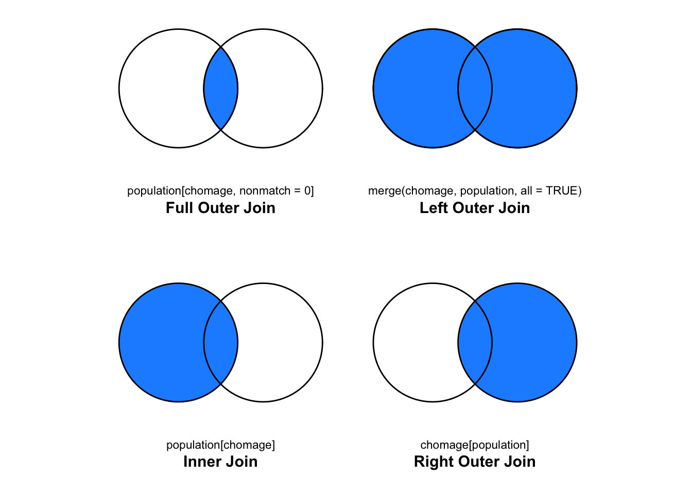

2 Données
L’objectif de R étant d’analyser des données, il est tout aussi important de connaître les différents types qu’elles peuvent prendre que de savoir les manipuler. Ce chapitre présente dans un premier temps les objets en R, puis s’intéresse à l’importation et à l’exportation de données, et finit par la manièere de créer et de manipuler les différents types de données.
2.1 Types de données
R gère des objets, qui sont caractérisés par un nom, un mode, une longueur et un contenu.
2.1.1 Mode
Le mode d’un objet est la nature des éléments qui le composent, leur type. On y accède par la fonction mode() ou encore typeof().
a <- 2
mode(a)## [1] "numeric"Il existe quatre principaux types :
numeric (numérique) : On distingue deux types numériques, à savoir les integers (entiers) et les double ou real (réels).
a <- 2.0 typeof(a)## [1] "double"is.integer(a) # a est un réel, pas un entier.## [1] FALSEb <- 2 typeof(b)## [1] "double"c <- as.integer(b) typeof(c)## [1] "integer"is.numeric(c) # c est bien un numérique.## [1] TRUELa variable
ca la même valeur que la variableb, mais elle nécessite un stockage en mémoire moins important (Lafaye de Micheaux, Drouilhet, and Liquet 2011). La fonctionis.integer()retourneTRUElorsque l’objet qui est fourni en argument est un entier,FALSEsinon. De manière plus générale, les instructions commençant paras.et suivies du nom d’un mode permettent de tester si l’objet indiqué en argument est de ce mode.character (caractère) : Les chaînes de caractères sont placées entre guillemets simples
'ou doubles".a <- "Hello world!" a## [1] "Hello world!"typeof(a)## [1] "character"logical (logique, booléen) : Les données de type logique peuvent prendre deux valeurs :
TRUEouFALSE. Elles répondent à une condition logique.a <- 1 ; b <- 2 a < b## [1] TRUEa == 1 # Test d'égalité## [1] TRUEa != 1 # Test d'inégalité## [1] FALSEis.character(a)## [1] FALSE(a <- TRUE)## [1] TRUE(a <- T)## [1] TRUEComme le montre l’exemple ci-dessus, il est possible d’abréger
TRUEenT; il en est de même pourFALSE, qui peut s’abéger enF.
Il peut parfois être pratique d’utiliser le fait que TRUE peut être automatiquement converti en 1 et FALSE en 0.
TRUE + TRUE + FALSE + TRUE*TRUE retournera 3.
complex (complexe) : Les nombres complexes sont caractérisés par leur partie réelle, que l’on peut obtenir à l’aide de la fonction
Re(); et par leur partie imaginaire, que l’on obtient grâce à la fonctionIm(). On créé un nombre complexe à l’aide de la lettrei.1i## [1] 0+1iz <- 2+3i Re(z) # Partie réelle de z## [1] 2Im(z) # Partie imaginaire de z## [1] 3Mod(z) # Module de z## [1] 3.605551Arg(z) # Argument de z## [1] 0.9827937
2.1.2 Longueur
La longueur d’un objet correspond au nombre d’éléments qu’il contient. On utilise la fonction length() pour connaître la longueur d’un objet.
a <- 1
length(a)## [1] 1Les données manquantes NA (not available) sont considérées comme étant de type logical par R.
typeof(x)## [1] "double"is.na(x)## [1] FALSE2.1.3 L’objet vide
L’objet NULL représente le vide en R. Il est de mode NULL et de longueur 0. Il ne faut cependant pas le confondre avec un objet vide.
x <- NULL
typeof(x)## [1] "NULL"length(x)## [1] 0is.null(x)## [1] TRUEis.null(list()) # La liste vide n'est pas NULL## [1] FALSE2.2 Structure des données
Il existe de nombreuses structures servant à organiser les données dans R. Cette introduction à R n’a pas pour vocation de lister toutes celles qui existantent, aussi, seules quelques unes (les principales à mes yeux) sont présentées dans cette section. Pour connaître la structure d’un objet, il est possible d’utiliser la fonction class()`.
2.2.1 Structures de base
2.2.1.1 Vecteurs
Les vecteurs sont extrêmement employés en R, et sont composés de données de mêmes types. La création d’un vecteur peut se faire à l’aide de la fonction de concaténation c().
c(1,2,3)## [1] 1 2 3[1] indique le rang de l’élément qui le suit dans le vecteur dont le contenu est affiché. La Section 2.4.2) permettra de mieux comprendre cet affichage.
Il est possible d’attribuer un nom aux éléments d’un vecteur, soit lors de la création, soit a posteriori, en utilisant la fonction names().
a <- c(nom = "Piketty", prenom = "Thomas", annee_naissance = "1971")
a## nom prenom annee_naissance
## "Piketty" "Thomas" "1971"b <- c("Piketty", "Thomas", "1971")
b## [1] "Piketty" "Thomas" "1971"names(b) <- c("nom", "prenom", "annee_naissance")
b## nom prenom annee_naissance
## "Piketty" "Thomas" "1971"Lorsque plusieurs types de données sont mélangés lors de la création du vecteur, R convertit les données dans le type le plus général.
c("deux", 1, TRUE)## [1] "deux" "1" "TRUE"La fonction is.vector() retourne TRUE si l’objet passé en argument est un vecteur.
a <- c(2,1)
is.vector(a)## [1] TRUELa fonction length() donne le nombre d’éléments qui composent le vecteur.
a <- c(2,1)
length(a)## [1] 22.2.1.2 Facteurs
Les travaux d’économétrie requièrent souvent l’emploi de variables qualitatives. R possède une structure qui gère ces variables : factor. On utilise la fonction factor() pour encoder un vecteur en facteur.
pays <- factor(c("France", "France", "Chine", "Espagne", "Chine"))
pays## [1] France France Chine Espagne Chine
## Levels: Chine Espagne Franceclass(pays)## [1] "factor"La fonction levels() retourne les niveaux du facteur.
levels(pays)## [1] "Chine" "Espagne" "France"Lors des analyses, il arrive de vouloir choisir la modalité de réféfence plutôt que de laisser R le faire automatiquement. Il suffit alors d’utiliser la fonction relevel(). Il faut toutefois ne pas oublier de réassigner le résultat à l’objet !
pays <- relevel(pays, ref = "Espagne")
pays## [1] France France Chine Espagne Chine
## Levels: Espagne Chine FranceSi les variables catégorielles sont ordonnées, R propose la fonction ordered().
revenus <-
ordered(c("<1500", ">2000", ">2000", "1500-2000", ">2000", "<1500"),
levels = c("<1500", "1500-2000", ">2000"))
revenus## [1] <1500 >2000 >2000 1500-2000 >2000 <1500
## Levels: <1500 < 1500-2000 < >20002.2.1.3 Dates
On note trois principales classes pour représenter des dates en R :
- Date : adapté pour les dates, uniquement celles pour lesquelles on ne possède pas d’informations à propos de l’heure (e.g.,
1977-05-27); - POSIXct et POSIXlt : pour les dates avec des heures (e.g.,
1977-05-27 20:00:00).
2.2.1.3.1 Dates
Les dates sont stoquées comme le nombre de jours depuis 1970-01-01, avec des valeurs négatives pour des dates antérieures. Le format d’affichage est celui du calendrier grégorien.
La fonction as.Date() convertit une chaîne de caratcères en date. Si le format est de la forme %Y-%m-%d ou %Y/%m/%d (avec %Y l’année avec le siècle, %m le mois sur deux chiffres et %d le jour sur deux chiffres), il n’est pas nécessaire de renseigner l’argument format de la fonction. L’argument origin permet quant à lui de préciser une origine différente de 1970-01-01.
(d <- as.Date("2020-10-21"))## [1] "2020-10-21"class(d)## [1] "Date"unclass(d)## [1] 18556# La date du jour
as.Date(Sys.time())## [1] "2020-10-19"# Avec un format non standard
(d <- as.Date("2020 21 10", format = ("%Y %d %m")))## [1] "2020-10-21"(d <- as.Date("21 Octobre, 2020", format = ("%d %B, %Y")))## [1] "2020-10-21"La fonction unclass() utilisée dans le précédent exemple permet de voir la valeur stockée en interne.
Comme on peut le voir dans le précédent exemple, l’argument format a été utilisé. Cet argument permet de préciser comment la date est écrite dans la chaîne de caractères, pour que la conversion en objet de classe date soit possible. Cette conversion est réalisée, en interne, par la fonctionstrptime(). La page d’aide de cette fonction (?strptime) donne les différents codes qui spécifient les formats de date. Attention, certains de ces formats dépendent d’arguments locaux à la machine (des exemples sont donnés plus loin).
Les codes spécifiant les formats de date sont consignés dans le tableau suivant.
| Code | Description | Exemple |
|---|---|---|
%a |
Abréviation du jour de la semaine (dépend du lieu) | Mer |
%A |
Jour de la semaine complet (dépend du lieu) | Mercredi |
%b |
Abréviation du mois (dépend du lieu) | oct |
%B |
Nom du mois complet (dépend du lieu) | octobre |
%c |
Date et heure (dépend du lieu) au format %a %e %b %H:%M:%S %Y |
Mer 21 oct 13:55:44 2020 |
%C |
Siècle (00-99) -1 (partie entière de la division de l’année par 100) | 20 |
%d |
Jour du mois (01–31) | 21 |
%D |
Date au format %m/%d/%y |
10/21/20 |
%e |
Jour du mois en nombre décimal (1–31) | 21 |
%F |
Date au format %Y-%m-%d |
2020-10-21 |
%h |
Même chose que %b |
oct |
%H |
Heure (00–24) | 13 |
%I |
Heure (01–12) | 01 |
%j |
Jour de l’année (001–366) | 295 |
%m |
Mois (01–12) | 10 |
%M |
Minute (00-59) | 55 |
%n |
Retour à la ligne en output, caractère blanc en input | |
%p |
AM/PM | PM |
%r |
Heure au format 12 AM/PM | format(d, "%r") |
%R |
Même chose que %H:%M |
13:55 |
%S |
Seconde (00-61) | 44 |
%t |
Tabulation en output, caractère blanc en input | |
%T |
Même chose que %H:%M:%S |
13:55:44 |
%u |
Jour de la semaine (1–7), commence le lundi | 3 |
%U |
Semaine de l’anné (00–53), dimanche comme début de semaine, et le premier dimanche de l’année définit la semaine 1 | 42 |
%V |
Semaine de l’année (00-53). Si la semaine (qui commence un lundi) qui contient le \(1^\textrm{er}\) janvier a quatre jours ou plus dans la nouvelle année, alors elle est considérée comme la semaine 1. Sinon, elle est considérée comme la dernière de l’année précédente, et la semaine suivante est considérée comme semaine 1 (norme ISO 8601) | 43 |
%w |
Jour de la semaine (0–6), dimanche étant 0 | 3 |
%W |
Semaine de l’année (00–53), le lundi étant le premier jour de la semaine, et typiquement, le premier lundi de l’année définit la semaine 1 (conviention G.B.) | 42 |
%x |
Date (dépend du lieu) | 21.10.2020 |
%X |
Heure (dépend du lieu) | 13:55:44 |
%y |
Année sans le siècle (00–99) | 20 |
%Y |
Année (en input, uniquement de 0 à 9999) | 2020 |
%z |
offset en heures et minutes par rapport au temps UTC | +0200 |
%Z |
Abréviation du fuseau horraire (en output seulement) | CEST |
2.2.1.3.2 POSIXct et POSIXlt
Si les dates à représenter contiennent des heures, il faut préférer le format POSIXct ou POSIXlt. Avec POSIXct, les dates sont stockées en secondes depuis les débuts d’Unix (1970-01-01 01:00:00). Avec POSIXlt, les dates sont stockées sous forme de liste dont les éléments correspondent à différentes composantes de la date (voir le tableau ci-dessous). Les fonctions as.POSIXct() et as.POSIXlt() permettent de convertir une chaîne de caractère représentant une date en objet POSIXct ou POSIXlt. à nouveau, la fonction strptime() est utilisée en interne pour réaliser la conversion des chaînes de caractères en dates.
# POSIXct
d <- as.POSIXct("2015-10-21 13:55:44")
unclass(d)## [1] 1445428544
## attr(,"tzone")
## [1] ""unclass(as.POSIXct("1970-01-01 01:00:00"))## [1] 0
## attr(,"tzone")
## [1] ""# POSIXlt
d <- as.POSIXlt("2015-10-21 13:55:44")
unlist(unclass(d))## sec min hour mday mon year wday yday isdst zone gmtoff
## "44" "55" "13" "21" "9" "115" "3" "293" "1" "CEST" NALes éléments de la liste d’un objet de classe POSIXlt sont répertoriés dans le tableau suivant (voir page d’aide ?DateTimeClasses).
| Code | Description |
|---|---|
sec |
secondes (0–61) |
min |
minutes (0–59) |
hour |
heures (0–23) |
mday |
jour du mois (1–31) |
mon |
mois après le premier de l’année (0–11) |
year |
années depuis 1900 |
wday |
jour de la semaine (0–6), début de semaine le dimanche |
yday |
jour de l’année (0–365) |
isdst |
indicateur d’heure d’été (positif si appliquable, zéro sinon ; néi inconnu) |
zone |
Abréviation du fuseau horaire local ("" si inconnu, ou UTC) |
gmtoff |
décalage en minutes par rapport au temps GMT (NA ou |
Le package {lubridate} propose également des fonctions pour gérer les dates. Il est pratique de charger le package en mémoire.
Pour convertir une chaîne de caractères représentant une date, il suffit d’utiliser une des trois fonctions suivantes : ymd(), mdy() et dmy(). Les trois lettres de ces fonctions font référence à l’année (y – year), le mois (m – month) et le jour (d – day). La position de ces lettres dans le nom de la fonction doit correspondre à celui des éléments correspondants dans la chaîne de caractères. Ainsi, ymd() s’attend à trouver d’abord l’année, puis le mois et enfin le jour dans la chaîne de caractères. Le gros avantage de ces fonctions est qu’il n’est pas nécessaire de préciser les séparateurs, une analyse est faite automatiquement pour le deviner.
library(lubridate)
ymd("2015-10-21")## [1] "2015-10-21"mdy("10.21-15")## [1] "2015-10-21"dmy("21 oct 2015")## [1] "2015-10-21"Il est possible de préciser le fuseau horaire (à condition que le nom soit reconnu par le système d’exploitation), en renseignant l’argument tz.
ymd("2015-10-21", tz = "Pacific/Auckland")## [1] "2015-10-21 NZDT"OlsonNames() retourne un vecteur contenant tous les fuseaux horaires disponibles.
S’il y a des informations d’heures dans les chaînes de caractères repésentant les dates, il suffit d’ajouter h (heures), ou hm (heures et minutes) ou hms (heures, minutes et secondes) au nom de la fonction, en séparant par un trait de soulignement.
ymd_hms("2015-10-21 10:00:50")## [1] "2015-10-21 10:00:50 UTC"2.2.1.4 Matrices
Les matrices sont des vecteurs auxquels un attribut dim de dimension est ajouté. Une matrice est un vecteur pour lequel l’attribut dim est de longueur 2. La fonction matrix() permet de créer une matrice en R. Le code ci-après stoque dans X une matrice de 3 lignes (nrow = 3) et de 2 colonnes (ncol = 2). Cette matrice est remplie par colonnes successives par les éléments du vecteur 1:6.
X <- matrix(1:6, ncol = 2, nrow = 3)
X## [,1] [,2]
## [1,] 1 4
## [2,] 2 5
## [3,] 3 6Pour que la matrice soit remplie par lignes successives plutôt que par colonne, il suffit d’ajouter l’argument byrow à la fonction matrix() et de lui donner la valeur TRUE.
Y <- matrix(1:6, ncol = 2, nrow = 3, byrow = TRUE)
Y## [,1] [,2]
## [1,] 1 2
## [2,] 3 4
## [3,] 5 6Lorsque la dimension dépasse 2, on parle de tableau (array). Par exemple, le code ci-après permet de créer un tableau de dimension \(2\times 4 \times 3\).
Z <- array(1:24, dim = c(2, 4, 3))
Z## , , 1
##
## [,1] [,2] [,3] [,4]
## [1,] 1 3 5 7
## [2,] 2 4 6 8
##
## , , 2
##
## [,1] [,2] [,3] [,4]
## [1,] 9 11 13 15
## [2,] 10 12 14 16
##
## , , 3
##
## [,1] [,2] [,3] [,4]
## [1,] 17 19 21 23
## [2,] 18 20 22 24Pour les matrices comme pour les tableaux, les données doivent toutes être du même type.
Les fonctions nrow() et ncol() donnent le nombre de lignes (rows) et de colonnes (columns) d’une matrice. La fonction dim() donne un vecteur contenant les dimensions de la matrice ou du tableau donné en argument.
X <- matrix(1:6, ncol = 2, nrow = 3)
dim(X)## [1] 3 2nrow(X)## [1] 3ncol(X)## [1] 22.2.1.5 Listes
Les listes dans R sont les structures les moins rigides. Elles peuvent contenir des éléments de modes différents, y compris des listes. Le mode des éléments de la liste n’est pas altéré, ce qui peut s’avérer utile dans certains cas.
(personne <- list("Piketty", "Thomas", "1971"))## [[1]]
## [1] "Piketty"
##
## [[2]]
## [1] "Thomas"
##
## [[3]]
## [1] "1971"class(personne)## [1] "list"Comme pour les vecteurs, il est possible de nommer les éléments de la liste, ce qui permet une meilleure lecture et un accès aux données parfois plus pratique. La Section @ref(donnees_manipulation) apportera plus de détails à ce propos.
personne <- list("nom de famille" = "Piketty",
prenom = "Thomas",
annee = 1971)
personne## $`nom de famille`
## [1] "Piketty"
##
## $prenom
## [1] "Thomas"
##
## $annee
## [1] 1971Pour aplatir une liste, R propose une fonction : unlist(). Cette fonction retourne un vecteur contenant tous les composants de la liste. Il faut toutefois garder à l’esprit que R se charge alors de convertir tous les éléments dans le mode le plus général. De fait, si cette fonction peut s’avérer pratique dans le cas de scalaires par exemple, elle peut également être destructrice lorsque mal employée.
unlist(personne)## nom de famille prenom annee
## "Piketty" "Thomas" "1971"2.2.2 Tableaux de données
2.2.2.1 Data Frames
Les tableaux de données sont au cœur de nombreuses procédures dans R notemment lorsqu’on estimes des modèles économétriques.
Traditionnellement, la structure adaptée aux données rectangulaires (variables en colonnes et observations en lignes) est ce que l’on appelle les data frames. Du fait de l’évolution des besoins ces dernières années, les data frames, bien qu’elles demeurent largement utilisées, tendent à être remplacées par les tibbles (cf La Section ?? pour découvrir cette structure similaire et comprendre pourquoi les tibbles remplacent progressivement les data frames).
Un data frame est une liste composée d’un ou plusieurs vecteurs de même longueur. Le mode des vecteurs n’est pas nécessairement identique à celui des autres. Une manière simple de se représenter les tableaux de données est de penser à une matrice dans laquelle les lignes représentent des individus et les colonnes des caractéristiques propres à ces individus. La création d’un tableau de données se fait via la fonction data.frame(). La fonction as.data.frame() permet quant à elle de convertir un objet d’un autre type en data frame.
L’exemple ci-après utilise les données du dataset women, présent dans le package {datasets}. Il s’agit de la taille (en pouces) et du poids (en livres) moyen des femmes américaines âgées entre 30 et 39 ans.
femmes <-
data.frame(height = c(58, 59, 60, 61, 62, 63, 64,
65, 66, 67, 68, 69, 70, 71, 72),
weight = c(115, 117, 120, 123, 126, 129,132,
135, 139, 142, 146, 150, 154, 159, 164))
femmes## height weight
## 1 58 115
## 2 59 117
## 3 60 120
## 4 61 123
## 5 62 126
## 6 63 129
## 7 64 132
## 8 65 135
## 9 66 139
## 10 67 142
## 11 68 146
## 12 69 150
## 13 70 154
## 14 71 159
## 15 72 164is.data.frame(femmes)## [1] TRUEclass(femmes)## [1] "data.frame"Comme pour les matrices, on peut obtenir les dimensions d’un data frame avec la fonction dim(), le nombre de lignes avec nrow() et le nombre de colonnes avec ncol().
2.2.2.2 Tibbles
Lorsque le volume des données devient conséquent, les data frames deviennt désagréables à manipuler. Par exemple, lorque l’on tente d’appeler un data frame dans la console, R tente d’aficher un maximum de lignes, puis finit par s’arrêter à la millième. Lorsque le nombre d’observation est important, il n’est pas rare que cet affichage provoque un très long temps d’attente. Une strucutre plus récente, les tibbles, gère ce genre de soucis en affichant uniquement un extrait plus court. Les tibbles (package {tibble}) font partie de l’ensemble de packages de l’environnement tidyverse.
La création d’un tibble est similaire à celle d’un data.frame.
library(tidyverse)
femmes_tibble <- tibble(height = c(58, 59, 60, 61, 62, 63, 64, 65,
66, 67, 68, 69, 70, 71, 72),
weight = c(115, 117, 120, 123, 126, 129, 132,
135, 139, 142, 146, 150, 154, 159, 164))
femmes_tibble## # A tibble: 15 x 2
## height weight
## <dbl> <dbl>
## 1 58 115
## 2 59 117
## 3 60 120
## 4 61 123
## 5 62 126
## 6 63 129
## 7 64 132
## 8 65 135
## 9 66 139
## 10 67 142
## 11 68 146
## 12 69 150
## 13 70 154
## 14 71 159
## 15 72 164Lorsqu’un tibble est créé, le nom des colonnes n’est pas modifié s’il ne respecte pas les anciennes règles de nommage (à condition d’utiliser les accents graves pour définir le nom).
tibble(`1essai!` = c(1, 2, 3, 4, 5))## # A tibble: 5 x 1
## `1essai!`
## <dbl>
## 1 1
## 2 2
## 3 3
## 4 4
## 5 5Les lignes ne sont pas nommées, elles sont simplement numérotées.
On peut noter que les vecteurs de longueur 1 seront recyclés, c’est-à-dire que la valeur sera répétée le nombre de lignes du tableau final.
tibble(col_deux = c(6, 7, 8, 9, 10),
col_trois = 0,)## # A tibble: 5 x 2
## col_deux col_trois
## <dbl> <dbl>
## 1 6 0
## 2 7 0
## 3 8 0
## 4 9 0
## 5 10 0Il est intéressant de noter qu’il est possible de faire appel au nom d’une colonne qui vient d’être créée, lors de la création d’un tibble, ce qui n’est pas réalisable avec un data frame.
tibble(
`1essai!` = c(1, 2, 3, 4, 5),
col_deux = c(6, 7, 8, 9, 10),
col_trois = 0,
test = `1essai!` + col_deux)## # A tibble: 5 x 4
## `1essai!` col_deux col_trois test
## <dbl> <dbl> <dbl> <dbl>
## 1 1 6 0 7
## 2 2 7 0 9
## 3 3 8 0 11
## 4 4 9 0 13
## 5 5 10 0 15Un data frame peut aisément être converti en tibble, à l’aide de la fonction as_tibble().
femmes_tibble_2 <- as_tibble(femmes)
femmes_tibble_2## # A tibble: 15 x 2
## height weight
## <dbl> <dbl>
## 1 58 115
## 2 59 117
## 3 60 120
## 4 61 123
## 5 62 126
## 6 63 129
## 7 64 132
## 8 65 135
## 9 66 139
## 10 67 142
## 11 68 146
## 12 69 150
## 13 70 154
## 14 71 159
## 15 72 164class(femmes_tibble_2)## [1] "tbl_df" "tbl" "data.frame"Pour comprendre pourquoi les tibbles ont tendance à remplacer les data frames, il est possible d’avancer les raisons suivantes (il en existe d’autres, mais à ce stade de la lecture de ces notes, cela ferait intervenir des concepts qui ne seront abordés que plus loin) :
- Lorsque l’on affiche un tibble en évaluant son nom dans la console, R n’affichera que les 10 premières lignes et l’ensemble des colonnes qui peuvent s’afficher sur l’écran ;
- Le mode des colonnes est décrit lors de l’affichage ;
- Une coloration syntaxique est proposée pour visualiser plus facilement les contenus.
Si l’on désire afficher davantage de lignes d’un tibbles dans la console que ce qui est proposé par défaut, il est possible de modifier les options de R, à l’aide de la fonction options().
Si le tibble est composé de plus de n lignes et que l’on souhaite afficher les m premières, il faut procéder comme suit :
options(tibble.print_max = n, tibble.print_min = m)L’affichage restreint le nombre de colonnes dans la console. Pour en afficher davantage, il faut modifier l’argument tibble.width. Par exemple, pour retourner toutes les colonnes, il faut procéder comme suit (attention, le code suivant n’est pas adapté en présence de volumes de données avec un nombre de variables très important) :
options(tibble.width = Inf)2.2.2.3 Data table
Le package {data.table} propose une structure de données appelée data.table[^La vignette d’introduction qui accompagne le package est très bien faite : https://cran.r-project.org/web/packages/data.table/vignettes/datatable-intro.html.], qui se veut être une alternative aux objets data frame et tibbles. Il faut toutefois noter qu’un objet de classe data.table est également un data.frame. L’idée derrière les data.table est de réduire la longueur du code, de proposer une syntatxe plus facile à écrire et lire, mais aussi de réduire drastiquement les temps de calculs en présence de volumes de données massifs. La syntaxe se rapproche un peu du SQL, mais évite pas mal de lourdeurs de ce langage.
Pour utiliser les fonctions du packages, il est pratique de charger ce dernier.
library(data.table)
femmes <-
data.table(height = c(58, 59, 60, 61, 62, 63, 64, 65, 66,
67, 68, 69, 70, 71, 72),
weight = c(115, 117, 120, 123, 126, 129, 132, 135,
139, 142, 146, 150, 154, 159, 164))
femmes## height weight
## 1: 58 115
## 2: 59 117
## 3: 60 120
## 4: 61 123
## 5: 62 126
## 6: 63 129
## 7: 64 132
## 8: 65 135
## 9: 66 139
## 10: 67 142
## 11: 68 146
## 12: 69 150
## 13: 70 154
## 14: 71 159
## 15: 72 164is.data.frame(femmes)## [1] TRUEis.data.table(femmes)## [1] TRUEclass(femmes)## [1] "data.table" "data.frame"2.3 Importation, exportation et création de données
Pour pouvoir analyser des données, il faut pourvoir les charger en mémoire. Heureusement, il n’est pas nécessaire de les rentrer à la main, il existe des fonctions qui permettent de les importer, depuis divers formats. Il est également possible d’enregistrer les données dans plusieurs formats. Puisqu’il est souvent utile de créer des données à l’intérieur de la session (par exemple des années, des variables indicatrices, des noms de mois, etc.), cette section présente quelques fonctions utiles à la création de données.
Avant toute chose, il convient de préciser qu’un environnement de travail (working directory) est assigné à R. Si R est lancé depuis un terminal, l’environnement de travail sera par défaut le répertoire courant à partir duquel la commande de lancement de R a été évaluée. C’est dans ce répertoire, dont on peut se rappeler le chemin grâce à l’instruction getwd() que R ira chercher les fichiers à importer et enregistrer les données lors de l’exportation. Si on souhaite lire des fichiers qui sont hors de ce répertoire, il est nécessaire d’indiquer à R leur chemin (relatif ou absolu). Pour changer de répertoire courant, il est possible d’utiliser la fonction setwd().
getwd()## [1] "/Users/ewengallic/Documents"Attention, l’utilisation de la fonction setwd() est considérée comme une mauvaise pratique. Deux exemples permettent de comprendre que l’utilisation de cette fonction peut s’avérer très pénible :
- lors d’un travail en collaboration, il est fort probable que la ou les personnes avec qui l’on travaille ne s’appellent pas comme nous ; de fait, le chemin indiquant le répertoire courant sera faux ;
- lors de l’acquisition d’un nouvel ordinateur, il est fort possible que l’arborescence ne soit pas exactement la même ; à nouveau, le chemin indiquant le répertoire de travail ne sera plus le bon.
Quelle pratique adopter, dans ce cas ? La réponse est simple : travailler à l’aide de projets. RStudio propose cette alternative[^Menu File > New Project....], et dans ce cas, le chemin vers le répertoire de travail est défini à l’extérieur, par RStudio. Il suffit alors d’utiliser des chemins relatifs lors de l’importation ou l’exportation de données, graphiques, etc., plutôt que des chemins absolus. Les deux problèmes mentionnés plus haut n’apparaitront pas.
list.files() est très pratique : elle permet de lister tous les documents et répertoires contenus dans le répertoire de travail, ou dans n’importe quel répertoire si l’argument path renseigne le chemin.
2.3.1 Importation
Lorsque les données sont présentes dans un fichier texte (ASCII), R propose deux fonctions : read.table() et scan(). Pour les données stockées dans des fichiers aux formats différents, il est nécessaire de s’appuyer sur d’autres fonctions, non contenues dans le package {base}. C’est le cas pour les fichiers Excel, SAS~ou STATA.
2.3.1.1 La fonction read.table
Cette fonction est très pratique lorsque les données sont déjà organisées dans un tableau dans le fichier à importer. Elle crée alors un data frame contenant les données. Dans l’exemple fictif ci-dessous, les données du fichier fichier.txt sont stockées dans le data frame df. Les variables seront nommées par défaut V1, V2,…
df <- read.table("fichier.txt")Il existe de nombreux arguments pour la fonction read.table(). Seuls les principaux seront abordés ici. Le lecteur ou la lectrice pourra consulter l’aide ?read.table() pour obtenir de plus amples détails.
| Argument | Description |
|---|---|
file |
Le nom du fichier, doit être une chaîne de caractères. Il peut être précédé du chemin relatif ou absolu. Attention (utile pour les utilisateurs de Windows) le caractère \ est proscrit, et doit être remplacé par / ou bien \\. à noter qu’il est possible de saisir une adresse web (URL) en guise de chaîne de caractère. |
header |
Valeur logique (header=FALSE par défaut) indiquant si la première ligne contient les noms de variables. |
sep |
Le séparateur de champ dans le fichier (chaîne vide par défaut, ce qui est au final traduit par une espace comme séparation). Par exmple, sep=";" si les champs sont séparés par un point-virgule, ou encore sep="\textbackslash t" s’ils sont séparés par une tabulation. |
dec |
Le caractère employé pour les décimales (par défaut, dec="."). |
row.names |
Un vecteur contenant le nom des lignes (de type caractère), ou bien le numéro ou le nom d’une variable du fichier. En omettant cet argument, les lignes sont numérotées. |
na.strings |
Une chaîne de caractère (ou un vecteur de chaînes de caractères) indiquant la valeur des données manquantes (par défaut, na.strings="NA"). Ces données manquantes seront converties en NA. |
colClasses |
Un vecteur de caractères indiquant les modes des colonnes. |
Il est possible d’employer l’instruction file.choose() pour ouvrir une boîte de dialogue au lieu d’écrire le chemin complet vers le fichier de données. Bien que cette interface puisse paraître agréable à l’utilisateur novice, elle risque de vite devenir contraignante si le fichier R est amené à être exécuté plusieurs fois, puisqu’à chaque appel, la boîte de dialogue s’ouvrira.
df <- read.table(file.choose())
Il existe des variantes de read.table() qui s’appuient sur cette fonction pour proposer à l’utilisateur des fonctions directement capables de lire leur fichier de données, sans avoir à changer les arguments sep et decim.
| Fonction | Séparateur de champs | Séparateur décimal |
|---|---|---|
read.csv() |
“,” |
“.” |
read.csv2() |
“;” |
“,” |
read.delim() |
“\t” |
“.” |
read.delim2() | “\t” | “,” |
Le package {readr} propose des alternatives extrêmement rapides aux fonctions read.table() et dérivées. L’équivalent de read.table() est read_delim(). Il suffit de lui préciser le séparateur de champ (delim), le séparateur des miliers étant automatiquement détecté. Attention, une ligne d’en-tête doit être présente dans le fichier de données.
df <- read_delim("data.csv", ";")
| Fonction | Séparateur de champs | Séparateur décimal |
|---|---|---|
read_csv() |
“,” |
“.” |
read_csv2() |
“;” |
“,” |
read_delim() |
“\t” |
“.” |
read_delim2() | “\t” | “,” |
2.3.1.2 La fonction scan
La fonction scan() est beaucoup plus souple que read.table(). Son emploi est requis dès que les données ne sont pas organisées comme un tableau. La nature des variables peut être spécifiée en renseignant l’argument what. On retrouve la plupart des arguments de la fonction read.table(). Le tableau ci-dessous présente les principaux; le lecteur ou la lectrice est invité•e à se reporter au fichier d’aide (?scan) pour obtenir de plus amples détails.
| Argument | Description |
|---|---|
file |
Nom de fichier ou chemin complet vers le fichier (peut être une URL) |
what |
Type des données lues |
nmax |
Nombre de données maximum à lire |
n |
Nombre de données à lire (pas de limite par défaut) |
sep |
Champ de séparation (caractère blanc par défaut) |
dec |
Caractère pour les décimales (“.” par défaut) |
skio |
Nombre de lignes à omettre avant de débuter l’importation |
na.strings |
Vecteur de chaînes de caractères indiquant les valeurs manquantes (NA par défaut) |
flush |
Si TRUE, commence l’importation de la ligne suivante après le dernier champs requis (permet d’avoir des commentaires après le dernier champ) |
scan(), l’argument file est comme suit : file="", l’utilisateur est invité à entrer les données au clavier. Pour clore la saisie, il suffit de terminer par une ligne blanche.
2.3.1.3 La fonction read.fwf
Parfois, les données que l’on récupère sont dans un format à largeur fixée (fixed width format). C’est le cas par exemple pour les données météorologiques issues du site de la National Oceanic and Atmospheric Administration (NOAA). R propose une fonction pour importer rapidement ce type de données : read.fwf(). Un argument fait son apparition par rapport à la fonction read.table(), il s’agit de widths, qui permet d’indiquer la largeur de chaque champ.
Prenons un exemple. Si le fichier de données est nommé data_fwf.txt et est présent dans le répertoire de travail, et qu’il contient les données suivantes :
FRANCEFR14.01 FRANCEFR23.02 FRANCEFR32.96 ITALIEIT15.90 ITALIEIT25.48 ITALIEIT34.32
alors, l’importation de ces données dans R pourra se faire de la manière suivante :
(df_fwf <- read.fwf("data_fwf.txt", widths = c(6,2,4)))read_fwf() du package {readr} est une alternative à la fonction read.fwf().
2.3.1.4 Importation depuis Excel©
Nous allons voir comment importer des données directement depuis un fichier à l’extension .xls ou .xlsx. Il existe plusieurs méthodes, qui sont bien expliquées dans les documents de référence de ce document. Nous allons uniquement aborder la manière à l’aide des fonctions read.xls() et read_excel() contenues dans les packages {gdata} et {readxl} respectivement. Par souci de reproductibilité, nous allons nous appuyer sur le fichier iris.xls, contenu dans le répertoire du package {gdata}.
library("gdata")
# Récupérer le lien vers le fichier iris.xls
xlsfile <- file.path(path.package('gdata'),'xls','iris.xls')
iris <- read.xls(xlsfile) # Créé un fichier csv temporaire
head(iris)## Sepal.Length Sepal.Width Petal.Length Petal.Width Species
## 1 5.1 3.5 1.4 0.2 setosa
## 2 4.9 3.0 1.4 0.2 setosa
## 3 4.7 3.2 1.3 0.2 setosa
## 4 4.6 3.1 1.5 0.2 setosa
## 5 5.0 3.6 1.4 0.2 setosa
## 6 5.4 3.9 1.7 0.4 setosaPar défaut, la fonction read.xls() importe les données de la première feuille. L’argument sheet permet d’indiquer la feuille souhaitée, en la référençant soit par son numéro, soit par son nom.
.txt dans Excel.
Pour les utilisateurs sous Windows, il est peut-être nécessaire d’indiquer le chemin vers l’interprète perl (le fichier se nomme perl.exe )
perl <- "C:\\Program Files\\FusionInventory-Agent\\perl\\bin\\perl.exe"
iris <- read.xls(xlsfile, perl = perl) # Créé un fichier csv temporaire
Avec read_xl(), la procédure est identique :
library("readxl")
# Récupérer le lien vers le fichier iris.xls
xlsfile <- file.path(path.package('gdata'),'xls','iris.xls')
iris <- read_excel(xlsfile)2.3.1.5 Importation depuis d’autres formats
Le package {foreign}, installé de base sous Windows, mais non chargé automatiquement en mémoire, permet de lire des données stockées dans de nombreux formats (par exemple DBF, STATA, SPSS, etc.). Pour les fichiers sas7bdat, produits par SAS©, on peut utiliser la fonction read.sas7bdat() du package {sas7bdat}.
2.3.2 Exportation
Pour enregistrer des données depuis un tibble, un data frame, un vecteur ou une matrice, la fonction write.table() peut être utilisée. Par exemple, si le tibble se nomme donnees, l’instruction ressemble à :
write.table(donnees, file = "nom_fichier.txt", sep = ";")Il existe d’autres arguments, que le lecteur ou la lectrice pourra consulter dans l’aide de la fonction write.table().
write_csv() du package {readr} est une alternative à la fonction write.csv().
La fonction save() permet elle aussi de sauvegarder des données en dehors de la session R, et cette fois, n’importe quelle classe d’objet peut être sauvegardée. Par exemple, si l’utilisateur souhaite sauvegarder les objets d1, d2 et d3, il lui suffit de rentrer l’instruction suivante :
save(d1, d2, d3, file = "nom_fichier.RData")Pour charger les fichiers d’extention .RData, il faut utiliser la fonction load() :
load("nom_fichier.RData")save.image() peut être appelée, ce qui revient au même que d’évaluer l’instruction save(list = ls(all=TRUE), file=".RData").
2.3.3 Génération
2.3.3.1 Séquences régulières
La fonction de concaténation, abordée précédemment est un moyen simple de créer un vecteur de données.
c(1,2,3)## [1] 1 2 3La fonction seq() est extrêmement utile. Elle crée un vecteur de séquences de nombres. Le premier argument définit la valeur du début de séquence, tandis que le second argument définit la valeur finale. L’argument by définit l’incrément, et vaut 1 par défaut. L’argument length.out permet quant à lui de définir la longueur souhaitée de la séquence, et définit donc automatiquement la valeur de l’incrément. Il faut noter que by et length.out ne peuvent évidemment pas être utilisés en même temps.
(a <- 2:4)## [1] 2 3 4seq(1,3)## [1] 1 2 3seq(1,3, by = 0.5)## [1] 1.0 1.5 2.0 2.5 3.0seq(1,3, length.out = 10)## [1] 1.000000 1.222222 1.444444 1.666667 1.888889 2.111111 2.333333 2.555556
## [9] 2.777778 3.000000La fonction :() génère une séquence de données espacées d’une unité. Attention, cette fonction, que l’on peut voir comme un opérateur, est prioritaire sur les opérations arithmétiques.
1:10## [1] 1 2 3 4 5 6 7 8 9 101.5:10## [1] 1.5 2.5 3.5 4.5 5.5 6.5 7.5 8.5 9.5Comme mentionné en Section 2.1.1, le stockage des données de mode integer prend moins de place que celles de type numeric. Avec les fonctions seq() ou :(), les données sont de type integer.
class(c(2,3,4))## [1] "numeric"class(seq(2,4))## [1] "integer"Pour créer une séquence de valeurs avec duplication du premier argument, on peut utiliser la fonction rep(). En jouant avec les arguments, on peut créer des réplications différentes. Voici quelques exemples.
rep(1, 3) # Répète trois fois la valeur 1## [1] 1 1 1rep(1:2, 3) # Répète trois fois la séquence 1:2## [1] 1 2 1 2 1 2rep(1:2, each = 3) # Répète chaque élément de la séquence 1:2 trois fois## [1] 1 1 1 2 2 2# Répète deux fois la séquence dans laquelle
# les éléments de la séquence 1:2 sont répétés trois fois
rep(1:2, 2, each = 3)## [1] 1 1 1 2 2 2 1 1 1 2 2 2# Répète la séquence 1:2 jusqu'à ce que
# la longueur du résultat soit égale à 3 (le résultat peut être tronqué)
rep(1:2, length.out = 3)## [1] 1 2 1La fonction seq_len() crée une suite de nombres entiers allant de 1 au nombre passé à l’unique argument length.out.
seq_len(4)## [1] 1 2 3 4La fonction sequence() génère une suite de nombres. Pour chaque élément passé à l’argument nvec, une séquence de nombre allant de 1 à cet élément, est créée. Les séquences d’entiers ainsi créées sont concaténées.
sequence(2:4)## [1] 1 2 1 2 3 1 2 3 4sequence(c(3,5))## [1] 1 2 3 1 2 3 4 5La fonction gl() permet de créer des séries de facteurs. Elle requière deux arguments : n, pour indiquer le nombre de niveaux souhaité, et k pour indiquer le nombre de réplications voulu. Il est possible de définir les étiquettes pour chacun des niveaux, en renseignant l’argument labels ou encore de préciser si les niveaux des facteurs doivent être ordonnés, avec l’argument logique ordered. L’argument length permet quant à lui de définir la longueur souhaitée du résultat.
gl(2, 4)## [1] 1 1 1 1 2 2 2 2
## Levels: 1 2gl(2, 4, length = 10)## [1] 1 1 1 1 2 2 2 2 1 1
## Levels: 1 2gl(2, 4, labels = c("Oui", "Non"))## [1] Oui Oui Oui Oui Non Non Non Non
## Levels: Oui NonEnfin, expand.grid() est une fonction très utile pour générer toutes les combinaisons possibles des vecteurs donnés en arguments.
expand.grid(age = seq(18, 20), genre = c("Femme", "Homme"), fumeur = c("Oui", "Non"))## age genre fumeur
## 1 18 Femme Oui
## 2 19 Femme Oui
## 3 20 Femme Oui
## 4 18 Homme Oui
## 5 19 Homme Oui
## 6 20 Homme Oui
## 7 18 Femme Non
## 8 19 Femme Non
## 9 20 Femme Non
## 10 18 Homme Non
## 11 19 Homme Non
## 12 20 Homme Non2.3.3.2 Séquences pseudo-aléatoires
R propose des fonctions pour de nombreuses distributions de probabilité. Pour chaque distribution de probabilité, il y a en général quatre fonctions, dont le nom commence par une des quatre lettres suivantes : r (random), d (density), p (probability) et q (quantile). Les fonctions commençant par la lettre r permettent de générer des données issues d’une loi de probabilité donnée ; celles commençant par la lettre d correspondent aux densités de probabilité (ou fonctions de masse dans le cas d’une variable aléatoire discrète) ; celles dont la première lettre est un p donnent la densité de probabilité cumulée (fonctions de répartition) ; et enfin celles commençant par la lettre q donnent les valeur de quantiles (fonctions quantiles).
Prenons un exemple avec la loi \(\mathcal{N}(0,1)\) :
rnorm(n = 1, mean = 0, sd = 1)## [1] -0.3507157dnorm(1) == 1/sqrt(2*pi) * exp(-1/2)## [1] TRUEpnorm(1.96)## [1] 0.9750021qnorm(0.025) ; qnorm(0.975)## [1] -1.959964## [1] 1.959964R propose des fonctions pour les lois de probabilité discrètes suivantes (liste non exhaustive) :
- Binomiale :
rbinom(n, size, prob); - Poisson :
rpois(n, lambda); - Géométrique :
rgeom(n, prob); - Hyper-géométrique :
rhyper(nn, m, n, k); - Binomiale négative :
rnbinom(n, size, prob, mu).
R propose des fonctions pour les lois de probabilité continues suivantes (liste non exhaustive) :
- Normale :
rnorm(n, mean = 0, sd = 1) - Student :
rt(n, df, ncp) - Khi-deux :
rchisq(n, df, ncp = 0) - Fisher :
rf(n, df1, df2, ncp) - Exponentielle :
rexp(n, rate = 1) - Uniforme :
runif(n, min = 0, max = 1) - Beta :
rbeta(n, shape1, shape2, ncp = 0) - Logistique :
rlogis(n, location = 0, scale = 1) - Log-Normale :
rlnorm(n, meanlog = 0, sdlog = 1) - Gamma :
rgamma(n, shape, rate = 1, scale = 1/rate) - Weibull :
rweibull(n, shape, scale = 1)
2.4 Manipulation des données
Dans la Section 2.2, nous avons vu comment créer différents objets en R. Cette section présente d’abord les opérateurs, puis les façons d’accéder aux données en fonction du type d’objet, les calculs sur les listes et vecteurs, et enfin les calculs matriciels.
2.4.1 Opérateurs
Il existe trois sortes d’opérateurs en R, à savoir arithmétiques, de comparaison et logiques.
2.4.1.1 Opérateurs arithmétiques
Les opérateurs arithmétiques agissent sur des vecteurs ou des matrices. Ils opèrent sur des objets de type numérique, complèxe ou logique. En voici la liste :
x <- c(1, 2, 3, 4, 5)
y <- c(2, 5, 2, 8, 1)
x + y # Addition## [1] 3 7 5 12 6x - y # Soustraction## [1] -1 -3 1 -4 4x * y # Multiplication## [1] 2 10 6 32 5x / y # Division## [1] 0.5 0.4 1.5 0.5 5.0x^y # Puissance## [1] 1 32 9 65536 5x %% y # Modulo## [1] 1 2 1 4 0x %/% y # Division entière## [1] 0 0 1 0 52.4.1.2 Opérateurs de comparaison
Les opérateurs de comparaison agissent sur des vecteurs, des matrices, des tableaux de données et des listes. Le type de données n’est pas restreint comme pour les opérateurs arithmétiques.
x <- seq_len(5)
x < 2 # Inférieur à## [1] TRUE FALSE FALSE FALSE FALSEx <= 2 # Inférieur ou égal à## [1] TRUE TRUE FALSE FALSE FALSEx > 2 # Supérieur à## [1] FALSE FALSE TRUE TRUE TRUEx >= 2 # Supérieur ou égal à## [1] FALSE TRUE TRUE TRUE TRUEx == 2 # Égal à## [1] FALSE TRUE FALSE FALSE FALSEx != 2 # Différent de## [1] TRUE FALSE TRUE TRUE TRUEAttention, il faut être prudent avec la fonction d’égalité. En effet, un exemple simple (voir Paradis (2002)) montre que deux objets qui nous semblent identiques ne le sont pas aux yeux de la machine, à cause des approximations effectuées lors des calculs. Il convient alors dans certains cas d’utiliser la fonction all.equal() plutôt que l’opérateur logique == ou la fonction identical().
0.9 == (1 - 0.1)## [1] TRUEall.equal(0.9, 1-0.1)## [1] TRUEidentical(0.9, 1 - 0.1)## [1] TRUE0.9 == (1.1 - 0.2)## [1] FALSEall.equal(0.9, 1.1-0.2)## [1] TRUEidentical(0.9, 1.1-0.2)## [1] FALSEEn fait, la fonction all.equal() donne une égalité approximative, à l’aide d’un seuil de tolérance !
all.equal(0.9, 1.1-0.2, tolerance = 1e-16)## [1] "Mean relative difference: 1.233581e-16"2.4.1.3 Opérateurs logiques
Les opérateurs logiques opèrent sur un ou deux objets de type logique. Les opérateurs ET et OU existent en R sous deux formes : la forme simple (& et |) et la forme double (&& et ||). La forme simple opère sur chaque élément des objets, et retourne le résultat de l’opération pour chaque élément. La forme double, quant à elle, opère uniquement sur le premier élément des objets.
x <- c(TRUE, TRUE, FALSE, FALSE)
y <- c(TRUE, FALSE, TRUE, FALSE)
!x # 'Non' logique## [1] FALSE FALSE TRUE TRUEx&y # 'Et' logique## [1] TRUE FALSE FALSE FALSEx&&y # 'Et' logique (revient à faire x[1] & y[1])## [1] TRUEx|y # 'Ou' logique## [1] TRUE TRUE TRUE FALSEx||y # 'Ou' logique (revient à faire x[1] | y[1])## [1] TRUExor(x, y) # 'Ou' exlusif## [1] FALSE TRUE TRUE FALSEIl existe deux fonctions importantes pour les vecteurs de type logical : any() et all() qui indiquent respectivement, si au moins un des éléments du vecteur vaut TRUE et si tous les éléments du vecteur valent TRUE.
x <- c(TRUE, FALSE)
any(x)## [1] TRUEy <- c(FALSE, FALSE)
any(y)## [1] FALSEall(!y)## [1] TRUE2.4.1.4 Attention au recyclage
Jusqu’ici, les exemples fournis au sujet des opérateurs ne concernaient que des objets de même longueur. Dans le cas des vecteurs, si un des deux objets concernés par l’opération est de taille inférieure à celle de l’autre, R effectue un recyclage, c’est à dire qu’il va compléter le vecteur le plus court à l’aide des valeurs de ce même vecteur, afin d’obtenir deux objets de même taille. On peut voir que R affiche un message d’avertissement lors d’une telle opération.
x <- c(1, 2, 3)
y <- c(1, 2, 3, 4, 5, 6, 7)
x + y## [1] 2 4 6 5 7 9 8# R a ajouté le vecteur c(1, 2, 3, 1, 2, 3, 1) à y2.4.2 Accès aux valeurs, modifications
Pour accéder aux éléments d’un objet, R propose plusieurs méthodes, qui peuvent varier selon le type d’objet.
2.4.2.1 Accès par indices
Un moyen simple d’accéder aux éléments d’un objet est d’utiliser le système d’indexation. Cette indexation peut être de type numérique ou logique. Dans le cas d’un vecteur, on extrait une composante en utilisant la fonction "["(), dont les arguments en dehors du vecteur pour lequel on souhaite réaliser une extraction peuvent être un vecteur d’indices d’éléments à extraire ou ne pas extraire, un vecteur d’éléments de type logique indiquant si l’élément doit être extrait ou non.
x <- c(4, 7, 3, 5, 0)
"["(x, 2) # Extraire le second élément de x## [1] 7x[2] # Une écriture plus commode pour extraire le second élément de x## [1] 7x[-2] # Tous les éléments de x sauf le second## [1] 4 3 5 0x[3:4] # Les troisième et quatrième éléments de x## [1] 3 5i <- 3:4
x[i] # On peut utiliser une variable contenant un vecteur d'indices## [1] 3 5x[c(F, T, F, F, F)] # Le second élément de x## [1] 7x[x<1] # Les éléments de x inférieurs à 1## [1] 0x<1 # Il s'agit bien d'un vecteur de logiques## [1] FALSE FALSE FALSE FALSE TRUELa fonction which() retourne les positions des éléments d’un vecteur logique pour lesquels la valeur vaut TRUE. Les fonctions which.min() et which.max() retournent respectivement la position du (premier) minimum et du premier maximum d’un vecteur numérique ou logique.
x <- c(2, 4, 5, 1, 7, 6)
which(x < 7 & x > 2)## [1] 2 3 6which.min(x)## [1] 4which.max(x)## [1] 5x[which.max(x)]## [1] 7Le remplacement d’un élément s’effectue simplement en utilisant la flèche d’assignation. On peut modifir plusieurs éléments à la fois.
x <- seq_len(5)
x[2] <- 3
x## [1] 1 3 3 4 5x[2] <- x[3] <- 0
x## [1] 1 0 0 4 5x[which(x == 0)] <- 10
x## [1] 1 10 10 4 5Pour les matrices ou les tableaux de données, l’extraction par indice se fait dans le même esprit, mais il faut indiquer un vecteur d’indices (i) pour les lignes et un pour les colonnes (j), de la manière suivante : x[i, j], avec x la matrice ou le tableau de donnée. En omettant le vecteur d’indices pour les lignes ou les colonnes, R retourne toutes les lignes ou les colonnes respectivement. Enfin, en ajoutant le symbole “moins” (-) devant le vecteur d’indices de lignes ou de colonnes, on demande à R de ne pas retourner les éléments dont les indices sont mentionnés.
(x <- matrix(1:9, ncol = 3, nrow = 3))## [,1] [,2] [,3]
## [1,] 1 4 7
## [2,] 2 5 8
## [3,] 3 6 9x[1, 2] # Élément de la ligne 1 et de la colonne 2## [1] 4i <- c(1,3) ; j <- 3
x[i,j] # Éléments des lignes 1 et 3 de la troisième colonne## [1] 7 9x[, 2] # Éléments de la seconde colonne## [1] 4 5 6x[1 ,] # Éléments de la première ligne## [1] 1 4 7x[, -c(1,3)] # x sans les colonnes 1 et 3## [1] 4 5 6Avec le dernier exemple, on voit que R retourne un vecteur et non une matrice. Si on souhaite obtenir une matrice à une seule colonne, il suffit d’ajouter l’argument drop auquel on donne la valeur FALSE.
x[, -c(1,3), drop = FALSE]## [,1]
## [1,] 4
## [2,] 5
## [3,] 6Pour modifier une valeur, c’est à nouveau avec la flèche d’assignation.
x <- matrix(1:9, ncol = 3, nrow = 3)
x[1,2] <- 0
x## [,1] [,2] [,3]
## [1,] 1 0 7
## [2,] 2 5 8
## [3,] 3 6 9On peut noter qu’en utilisant which() sur une matrice, on peut demander à R de retourner les indices sous forme de couples :
which(x > 5, arr.ind = TRUE)## row col
## [1,] 3 2
## [2,] 1 3
## [3,] 2 3
## [4,] 3 3Il est également possible d’utiliser des vecteurs logiques.
(x_logique <- matrix(c(TRUE, FALSE), ncol = 3, nrow = 3))## [,1] [,2] [,3]
## [1,] TRUE FALSE TRUE
## [2,] FALSE TRUE FALSE
## [3,] TRUE FALSE TRUEx[x_logique]## [1] 1 3 5 7 9Comme indiqué dans la Section 2.2.1.4, les matrices et les tableaux sont des vecteurs, qui correspondent à un empilement des vecteurs colonnes. Ainsi, on peut extraire les éléments de la matrice à l’aide d’un vecteur d’indices ou de valeurs logiques.
x[c(1,3,7)]## [1] 1 3 7Pour les tableaux de dimension supérieure à 2, il suffit juste d’ajouter un argument par dimension supplémentaire. Voici un exemple avec un tableau de dimension 3 :
z <-array(1:24, dim =c(2, 4, 3))
z[2,4,3] # Élément de la ligne 2, colonne 4 de la dimension 3## [1] 24Enfin, pour les listes, l’emploi de la fonction "["() retourne une liste, puisque les listes sont constituées de listes.
personne <- list("Piketty", "Thomas", "1971")
personne[1]## [[1]]
## [1] "Piketty"class(personne[1])## [1] "list"personne[c(1,3)]## [[1]]
## [1] "Piketty"
##
## [[2]]
## [1] "1971"Pour obtenir le contenu d’un ou plusieurs éléments de la liste, on fait donc appel à une autre fonction : "[["(). Comme pour la fonction avec les crochets simples, on peut l’employer d’une manière plus commode en l’accolant au nom de la liste contenant les éléments que l’on souhaite extraire.
"[["(personne, 1) # Premier élément de la liste## [1] "Piketty"personne[[1]] # idem## [1] "Piketty"personne[[1,2]] # Ne fonctionne pas## Error in personne[[1, 2]]: nombre d'indices incorrectpersonne[[c(1,2)]] # Ne fonctionne pas non plus ici## Error in personne[[c(1, 2)]]: indice hors limitespersonne[1,2] # Ne fonctionne pas## Error in personne[1, 2]: nombre de dimensions incorrectpersonne[c(1,2)] # Retourne une liste de dim 2 contenant :## [[1]]
## [1] "Piketty"
##
## [[2]]
## [1] "Thomas" # - le premier élément de la liste
# - le second élément de la listeGrâce à la propriété d’indexation récursive, il est possible d’accéder aux éléments des objets de la liste. Par exemple, si le troisième élément de la liste l est un vecteur, et que l’on souhaite récupérer son premier élément, on peut écrire procéder de deux manières :
(l <- list("foo_1", "foo_2", c("foo_3", "foo_4")))## [[1]]
## [1] "foo_1"
##
## [[2]]
## [1] "foo_2"
##
## [[3]]
## [1] "foo_3" "foo_4"l[[3]] # Troisième élément de la liste## [1] "foo_3" "foo_4"l[[c(3,1)]] # Premier élément du troisième élément## [1] "foo_3"l[[3]][1] # Premier élément du troisième élément## [1] "foo_3"Pour modifier l’élément d’une liste ou son contenu, on utilise encore la flèche d’assignation. Attention, ceci peut être destructif. En effet, si on indique à R que l’on souhaite modifier le contenu d’un élément, en utilisant la fonction "[["(), le résultat sera le même qu’en utilisant la fonction "["().
l <- list(1, TRUE, "foo", list(matrix(1:4, ncol = 2), "foo_2"))
l[[4]] <- 2
l # La liste en position 4 a été remplacée par un vecteur de longueur 1## [[1]]
## [1] 1
##
## [[2]]
## [1] TRUE
##
## [[3]]
## [1] "foo"
##
## [[4]]
## [1] 22.4.2.2 Accès par noms
Comme précisé dans la Section 2.2, les éléments d’un vecteur peuvent posséder un nom. Il est alors possible d’accéder à un élément par son nom.
personne <- c(nom = "Piketty", prenom = "Thomas", "annee de naissance" = "1971")
personne["nom"]## nom
## "Piketty"names(personne) # Accès aux noms des éléments du vecteur## [1] "nom" "prenom" "annee de naissance"names(personne) <- c("nom", "prenom", "naissance") # Modification des noms
personne## nom prenom naissance
## "Piketty" "Thomas" "1971"names(personne) <- NULL # Suppression des noms
personne## [1] "Piketty" "Thomas" "1971"Si l’objet est une liste ou un tableau de données, on peut aussi utiliser le symbole dollar ($).
personne_liste <-
list('nom de famille' = "Piketty", prenom = "Thomas", annee = 1971)
personne_liste[["nom de famille"]]## [1] "Piketty"personne_liste$"nom de famille" # Le nom contenant au moins une espace,## [1] "Piketty" # Il est nécessaire d'employer des guillemets
personne_liste$prenom## [1] "Thomas"names(personne_liste) # Accès aux noms des éléments de la liste## [1] "nom de famille" "prenom" "annee"Dans le cas des matrices et des tableaux de données, il est possible de donner un nom aux lignes (pas avec les tibbles) et aux colonnes, avec les fonctions rownames() et colnames() respectivement. La fonction dimnames() retourne une liste dont le premier élément est une liste contenant le vecteur des noms de lignes, et le second élément une liste contenant le vecteur des noms de colonnes.
femmes <-
tibble(height =c(58, 59, 60, 61, 62, 63, 64, 65, 66,
67, 68,69, 70, 71, 72),
weight =c(115, 117, 120, 123, 126, 129, 132,
135, 139,142, 146, 150, 154, 159, 164))
colnames(femmes)## [1] "height" "weight"rownames(femmes)## [1] "1" "2" "3" "4" "5" "6" "7" "8" "9" "10" "11" "12" "13" "14" "15"dimnames(femmes)## [[1]]
## [1] "1" "2" "3" "4" "5" "6" "7" "8" "9" "10" "11" "12" "13" "14" "15"
##
## [[2]]
## [1] "height" "weight"Pour remplacer des valeurs, on utilise encore la flèche d’assignation. R produit un message d’erreur si l’élément de remplacement n’est pas de la bonne longueur pour le tibble ou le data frame.
tb <- tibble(x = seq_len(3), y = rep(2,3), z = c(1,4,3))
tb$x <- rep(NA, 3)
tb## # A tibble: 3 x 3
## x y z
## <lgl> <dbl> <dbl>
## 1 NA 2 1
## 2 NA 2 4
## 3 NA 2 3tb$x <- rep(1, 4)## Error: Assigned data `rep(1, 4)` must be compatible with existing data.
## x Existing data has 3 rows.
## x Assigned data has 4 rows.
## ℹ Only vectors of size 1 are recycled.tb # La modification n'a pas été faite## # A tibble: 3 x 3
## x y z
## <lgl> <dbl> <dbl>
## 1 NA 2 1
## 2 NA 2 4
## 3 NA 2 3# Attention
is.list(tb$x)## [1] FALSEtb$x <- list(4,3,2)
tb$x # La colonne "x" a changé de structure !## [[1]]
## [1] 4
##
## [[2]]
## [1] 3
##
## [[3]]
## [1] 22.4.3 Chaînes de caractères
Savoir manipuler les chaînes de caractères permet de gagner énormément de temps dans le traitement de données texte, mais permet également de produire des sorties, graphiques ou non, plus lisibles et compréhensibles que les affichages par défaut proposés par R. Le lecteur ou la lectrice intéressé•e par la manipulation avancée des chaînes de caractères en R est invité à consulter l’ebook de Gaston Sanchez (Sanchez 2013).
2.4.3.1 Concaténation
La fonction cat() concatène et affiche à l’écran des objets. Les arguments qui sont fournis sont convertis en vecteurs de chaînes de caractères, qui sont ensuite concaténés en un seul vecteur de caractères. Les éléments de ce vecteur sont ensuite joints entre eux, et éventuellement séparés par un caractère différent de l’espace, si l’argument sep est modifié.
cat("Hello", "World", "!")## Hello World !# En ajoutant un passage à la ligne entre chaque élément
cat("Hello", "World", "!", sep = "\n")## Hello
## World
## !cat(matrix(1:6))## 1 2 3 4 5 6Le caractère \ (barre oblique inversée, ou backslash) est le caractère d’échappement en R. Il permet d’afficher certains caractères, comme les guillemets dans une chaîne elle-même définie à l’aide de guillemets, ou bien les caractères de contrôle, comme la tabulation, le saut de ligne, etc. Le fichier d’aide de R fournir de plus amples détails. Le tableau ci-dessous fournit quelques exemple courants.
| Caractère | Description | Caractère | Description |
|---|---|---|---|
\n |
Nouvelle ligne | \r |
Retour à la ligne |
\t |
Tabulation | \b |
Retour arrière |
\\ |
Barre olbique inversée | \' |
Apostrophe |
\" |
Apostrophe double | \‘ |
Accent grave |
La fonction str_c() du package {stringr} convertit en chaîne de caractères les éléments passés en argument puis les concatène. Il est tout à fait possible de stocker le résultat dans un objet, dans la mesure où le résultat de l’évaluation de str_c(), contrairement à celui de l’évaluation de cat() est une chaîne de caractères. L’argument sep permet de définir la chaîne de caractères séparant les termes (rien par défaut).
Il est nécessaire de charger le package avant d’appeler les fonctions qu’il contient (et de l’installer lors de la première utilisation).
library(stringr)
x <- str_c("Hello", "World", "!", sep = " ")
x## [1] "Hello World !"La fonction str_c() dispose aussi de l’argument collapse, qui est utile pour joindre les éléments d’un vecteur dans une même chaîne de caractères.
str_c(c("Marseille", "Bouches-du-Rhône"))## [1] "Marseille" "Bouches-du-Rhône"# Il n'y a qu'un argument, donc le séparateur est inutile !
str_c(c("Marseille", "Bouches-du-Rhône"), sep = ", ")## [1] "Marseille" "Bouches-du-Rhône"# En ajoutant l'argument collapse
str_c(c("Marseille", "Bouches-du-Rhône"), collapse = ", ")## [1] "Marseille, Bouches-du-Rhône"str_c() s’appuie en fait sur la fonction paste() du package {base}. Par défaut, la chaîne de séparation utilisée dans paste() est une espace. La fonction paste0() permet quant à elle de concaténer les chaînes sans séparateur.
Il existe cependant de légères différences entre les deux fonctions, comme la festion des éléments NULL et character(0) :
paste("You", "shall", character(0), "not", NULL, "pass")## [1] "You shall not pass"str_c("You", "shall", character(0), "not", NULL, "pass", sep = " ")## [1] "You shall not pass"Si les objets donnés en argument à la fonction str_c() sont de tailles différentes, un recyclage est effectué par R.
str_c("Hello", c("Julien-Yacine", "Sonia", "Victor"))## [1] "HelloJulien-Yacine" "HelloSonia" "HelloVictor"Attention, R convertit les valeurs manquantes (NA) en chaînes de caractères "NA".
str_c("Hello", NA)## [1] NAstr_c(), il faut faire appel à la fonction get().
variable_1 <- 5
# Affiche la chaîne "variable_1"
str_c("variable_", 1)## [1] "variable_1"# Affiche le contenu de la variable nommée "variable_1"
get(str_c("variable_", 1))## [1] 52.4.3.2 Conversion en majuscules ou minuscules
Afin de passer une chaîne de caractères en majuscules ou en minuscules, le package {stringr} propose les fonctions str_to_upper() et str_to_lower().
x <- "Bonjour !"
str_to_upper(x)## [1] "BONJOUR !"str_to_lower(x)## [1] "bonjour !"2.4.3.3 Compter le nombre de caractères d’une chaîne
La fonction str_length() du package {stringr} indique le nombre de caractères contenus dans une chaîne.
str_length("Bonjour")## [1] 7La fonction str_length() s’appuie sur la fonction nchar() du package {base}. On peut noter que la longueur de NA vaut NA avec str_length() et 2 avec la fonction native nchar().
texte <- c("Mais enfin", "c'est quoi", "un gigowatt ?", NA)
str_length(string = texte)
nchar(x = texte)2.4.3.4 Extraction de sous-chaînes
Pour extraire une sous-chaîne, on peut utiliser la fonction str_sub() du package {stringr}, qui prend en arguments une chaîne de caractères, la position du début et celle de la fin de l’élément à extraire. Attention, l’indice du premier élément, tout comme pour les vecteurs, est 1 en R.
x <- "Debt is one person's liability, but another person's asset."
str_sub(x, 1, 4)## [1] "Debt"Il est possible d’utiliser la flèche d’assignation après la fonction str_sub() pour remplacer la sous-chaîne extraite par une autre. Si la chaîne de remplacement est trop longue, elle n’est pas tronquée pour avoir la même longueur que celle qui est extraite.
str_sub(x, 1, 4) <- "Remplacement"
x## [1] "Remplacement is one person's liability, but another person's asset."L’argument string de la fonction str_sub() peut être un vecteur. Dans ce cas, la fonction est appliquée à chaque élément du vecteur.
str_sub(c("Rouge", "Vert", "Bleu"), 2, 3)## [1] "ou" "er" "le"Lors du remplacement, R peut avoir recours au recyclage.
x <- c("Rouge", "Vert", "Bleu")
str_sub(x, 2, 3) <- c("!!", "@@")
x## [1] "R!!ge" "V@@t" "B!!u"En fournissant aux arguments start et end des valeurs négatives, on indique à R de lire la chaîne à l’envers :
texte <- "le train de tes injures roule sur le rail de mon indifférence"
str_sub(string = texte, start = 4, end = 8)## [1] "train"# Compter à partir du dernier caractère
str_sub(string = texte, start = -12, end = -1)## [1] "indifférence"str_sub(string = texte, start = -16)## [1] "mon indifférence"La fonction str_sub() s’appuie sur la fonction substr() du package {base}, mais propose quelques améliorations.
Dans le cas du remplacement d’une chaîne extraitre par une autre, on distingue trois cas :
- la chaîne de remplacement est de même longueur que celle extraite :
str_sub()etsubstr()se comportent de la même manière ; - a chaîne de remplacement est plus courte que celle extraite : avec
substr(), la chaîne de remplacement est complétée par la fin de celle extraite, tandis qu’avecstr_sub(), la chaîne extraite est retirée et remplacée par celle de remplacement ; - la chaîne de remplacement est plus longue que celle extraite : avec
substr(), la chaîne de remplacement est tronquée, tandis qu’elle ne l’est pas avecstr_sub().
texte <- "le train de tes injures roule sur le rail de mon indifférence"
# On copie le contenu de texte dans une nouvelle variable
texte_2 <- texte
# Remplacement plus court que la chaîne extraite
str_sub(string = texte, start = 17, end = 23)## [1] "injures"str_sub(string = texte, start = 17, end = 23) <- "jurons"
substr(x = texte_2, start = 17, stop = 23) <- "jurons"
texte ; texte_2## [1] "le train de tes jurons roule sur le rail de mon indifférence"## [1] "le train de tes juronss roule sur le rail de mon indifférence"# Remplacement plus long que la chaîne extraite
str_sub(string = texte, start = 1, end = 8)## [1] "le train"str_sub(string = texte, start = 1, end = 8) <- "la locomotive"
substr(x = texte_2, start = 1, stop = 8) <- "la locomotive"
texte ; texte_2## [1] "la locomotive de tes jurons roule sur le rail de mon indifférence"## [1] "la locom de tes juronss roule sur le rail de mon indifférence"2.4.3.5 Recherche de chaînes de caractères
Quand on souhaite trouver un motif (pattern) dans un vecteur de chaînes de caractères, on peut utiliser la fonction str_detect() du package stringr. Elle retourne les indices des éléments du vecteur dans lesquels le motif a été trouvé.
str_detect(string = c("Pomme", "Poire", "Ananas"), pattern = "o")## [1] TRUE TRUE FALSEPour remplacer la première occurrence du motif trouvé par une autre chaîne (qui n’est pas tenue d’être de la même longueur de caractères), on peut utiliser la fonction str_replace().
str_replace(string = c("Pomme", "Poire", "Ananas"), pattern = "a", replacement = "@@")## [1] "Pomme" "Poire" "An@@nas"Si on désire remplacer toutes les occurrences trouvées, il faut alors utiliser la fonction str_replace_all().
str_replace_all(string = c("Pomme", "Poire", "Ananas"), pattern = "a", replacement = "@@")## [1] "Pomme" "Poire" "An@@n@@s"Si on souhaite ignorer la casse, il suffit de faire appel à la fonction regex() en précisant à l’aide de l’argument ignore_case que l’on souhaite ne pas prendre en compte la casse :
str_detect(string = c("Obi-Wan Kenobi", "Darth Vader"), pattern = "w")## [1] FALSE FALSEstr_detect(string = c("Obi-Wan Kenobi", "Darth Vader"),
pattern = regex("w", ignore_case = TRUE))## [1] TRUE FALSEPour briser une chaîne en fonction d’un motif, le package {stringr} propose la fonction str_split().
x = "Criquette ! Vous, ici ? Dans votre propre salle de bain ? Quelle surprise !"
str_split(string = x, pattern = " ")## [[1]]
## [1] "Criquette" "!" "Vous," "ici" "?" "Dans"
## [7] "votre" "propre" "salle" "de" "bain" "?"
## [13] "Quelle" "surprise" "!"Une des rares fonctions du package stringr ne commençant pas par le préfixe str est la fonction word(). Comme son nom le laisse présager, elle permet d’extraire des mots dans une phrase. Les mots sont repérés par défaut par une espace, mais il est possible de préciser un séparateur différent avec l’argument sep. L’argument start attend une valeur entière donnant la position du premier mot à extraire (celle du premier mot de la phrase, par défaut). Si la valeur est négative, le comptage s’effectue de la droite vers la gauche. L’argument end attend l’entier donnant la position du dernier mot à extraire (vaut la valeur de start s’il est omis). Encore une fois, si la valeur est négative, le comptage s’effectue de la droite vers la gauche.
phrase <- c("Mademoiselle Deray, il est interdit de manger de la choucroute ici.",
"Oh si si, prenez un chewing-gum, Émile.")
word(phrase) # Extraction du premier mot## [1] "Mademoiselle" "Oh"word(phrase, 2) # Extraction du second mot## [1] "Deray," "si"word(phrase, -1) # Extraction du dernier mot## [1] "ici." "Émile."word(phrase, 2, -1) # Extraction du second au dernier mot## [1] "Deray, il est interdit de manger de la choucroute ici."
## [2] "si si, prenez un chewing-gum, Émile."# Du premier au dernier mot, du second au dernier, et du troisième au dernier
# pour le premier élément de phrase
word(phrase[1], 1:3, -1)## [1] "Mademoiselle Deray, il est interdit de manger de la choucroute ici."
## [2] "Deray, il est interdit de manger de la choucroute ici."
## [3] "il est interdit de manger de la choucroute ici."# Premier mot, Premier et second mot, Premier et troisième mot
# pour le second élément de phrase
word(phrase[2], 1, 1:3)## [1] "Oh" "Oh si" "Oh si si,"str_detect() s’appuie sur la fonction grepl() du package {base} ; les fonctions str_replace() et str_replace_all() sur la fonction sub() du package {base}. La fonction str_split() correspond à la fonction strsplit() du package {base}.
Des recherches bien plus complèxes et puissantes peuvent être effectuées avec R, et sont présentées dans la Section 7.
2.4.3.6 Nettoyage, complétion
2.4.3.6.1 La fonction str_dup()
La fonction str_dup() du package {stringr} permet de dupliquer du texte. Elle est vectorisée à la fois pour le vecteur de texte à fournir à l’argument string et au vecteur d’entiers à fournir à l’argument times.
texte <- c("bla", "ah", "eh")
str_dup(texte, 2)## [1] "blabla" "ahah" "eheh"str_dup(texte, 1:3)## [1] "bla" "ahah" "eheheh"2.4.3.6.2 La fonction str_pad()
Certains fichiers de données ont des largeurs fixes pour chaque colonne. Si on désire créer facilement ce genre de fichiers, la fonction str_pad() du package stringr peut se révéler très pratique. En effet, elle permet de définir un caractère à insérer avant ou après une chaîne, ou bien avant et après, et de le répéter un nombre donné de fois. On précise la longueur des chaînes retournées avec l’argument width, le caractère à insérer pour éventuellement compléter la chaîne avec l’argument pad et le côté sur lequel insérer ce caractère avec l’argument side pouvant prendre les valeurs "left", "right" ou "both".
coords <- c(lat = "48.11", long = "-1.6794")
str_pad(string = coords, width = 7, side = "left", pad = " ")## [1] " 48.11" "-1.6794"# Les chaînes plus longues que la valeur fournie à width sont inchangées
str_pad(c("Gauthier", "Pascaline"), 3)## [1] "Gauthier" "Pascaline"Cette fonction est également utile lorsque l’on veut créer des noms de fichiers préfixés par un nombre, de manière à permettre leur rangement par ordre croissant dans l’explorateur de fichier (10.txt viendra avant 9.txt tandis que 09.txt viendra avant 10.txt).
2.4.3.6.3 La fonction str_trim()
Pour retirer des caractères blancs (e.g., espaces, sauts de ligne, retours à la ligne, quadratins, etc.), on peut utiliser des méthodes abordées dans la Section @ref(manip_strings_regex), ou bien la fonction str_trim() du package {stringr}. Elle retire tous les caractères blancs à gauche et à droite d’une chaîne de caractères. L’argument side permet de choisir le côté pour lequel on désire retirer les caractères blancs. Il peut prendre les valeurs both (par défaut), left ou right.
texte <- c("\n\nPardon, du sucre ?", "Oui, seize \n ", "...\t\t...\t")
str_trim(texte, side = "both")## [1] "Pardon, du sucre ?" "Oui, seize" "...\t\t..."2.4.4 Dates
Comme indiqué dans la Section 2.2.1.3, les dates en R peuvent être de trois classes différentes, Date, POSIXct et POSIXlt. Dans cette Section, nous allons voir comment manipuler ces dates, à l’aide des fonctions du package {lubridate}.
2.4.4.1 Extraction
Le package {lubridate} propose quelques fonctions pour accéder aux éléments d’une date.
| Fonction | Extraction |
|---|---|
second() |
secondes (0–59) |
minute() |
minutes (0–59) |
hour() |
heures (0–23) |
day(), mday() |
jour du mois (1–31) |
wday() |
jour de la semaine (1–7), le dimanche étant le 1 |
yday() |
jour de l’année (1–366) |
week() |
numéro de la semaine dans l’année. Les semaines sont définies comme les pé- riodes complètes de 7 jours s’étant déroulées depuis le premier janvier, plus 1 |
isoweek() |
Semaine de l’année (00-53). Si la semaine (qui commence un lundi) qui contient le 1er janvier a 4 jours ou plus dans la nouvelle année, alors elle est considérée comme la semaine 1. Sinon, elle est considérée comme la dernière de l’année précédente, et la suivante est considérée comme semaine 1 |
month() |
mois (1–12) |
year() |
année, uniquement celles après l’an 1 |
tz() |
fuseau horraire |
Les fonctions wday() et month() permettent aussi d’afficher le jour de la semaine et le mois, respectivement, en chaîne de caractères, en donnant leur nom dans le langage par défaut de votre session R. Pour cela, il faut attribuer la valeur TRUE a l’argument label. Si on souhaite les abréviations, il faut donner la valeur TRUE à l’argument abbr en sus.
library(lubridate)
(d <- ymd_hms("2020-03-17 23:59:59"))## [1] "2020-03-17 23:59:59 UTC"lubridate::wday(d, label = TRUE)## [1] Mar
## Levels: Dim < Lun < Mar < Mer < Jeu < Ven < Samlubridate::wday(d, label = TRUE, abbr = TRUE)## [1] Mar
## Levels: Dim < Lun < Mar < Mer < Jeu < Ven < SamIl arrive que l’on préfère obtenir ces noms dans une autre langue (lorsque l’on doit réaliser des graphiques en anglais, par exemple). Deux options simples peuvent être mises en place : la traduction “à la main”, en créant un tableau de correspondande entre la langue par défaut de la session R et celle désirée. La seconde solution est plus pratique. Elle consiste à faire appel à l’argument locale des fonctions de {lubridate}. Il suffit de fournir à cet argument le nom du local à utiliser. Le seul hic, est que ce nom est dépendant du système… Il faut donc le prendre en compte lors de la rédaction de codes, pour que le script puisse être lancé sur un système Unix ou Windows.
Sous Unix, on peut afficher l’ensemble des noms disponibles avec la commande système suivante (évaluée directement depuis la console R) :
system("locale -a", intern = TRUE)Pour Windows, il faut consulter la liste des noms est disponible sur la documentation en ligne de Microsoft : il faut chercher dans un moteur de recherche l’expression : "MSDN Language Strings"[^comme indiqué sur cette réponse sur StakOverflow.].
Ainsi, pour obtenir l’affichage du nom du jour de la semaine en anglais, on écrira :
- Sous Unix :
wday(ymd("2020-03-17"), label = TRUE, abbr = FALSE,
locale = "en_US")- Sous Windows:
wday(ymd("2020-03-17"), label = TRUE, abbr = FALSE,
locale = "english_us")Si on désire que le script soit exportable sur différents systèmes d’exploitation, on peut prévoir, à l’aide d’une instruction conditionnelle (ces aspects seront abordés dans un autre chapitre), les deux cas de figure : Unix ou Windows. En effet, l’expression .Platform$OS.type permet d’afficher le type de système d’exploitation :
.Platform$OS.type## [1] "unix"Aussi, pour que le code soit exportable, on peut écrire :
if(.Platform$OS.type == "unix"){
wday(ymd("2020-03-17"), label = TRUE, abbr = FALSE,
locale = "en_US")
}else{
wday(ymd("2020-03-17"), label = TRUE, abbr = FALSE,
locale = "english_us")
}Lorsque les formats de dates ne respectent pas les standards habituels (c’est le cas par exemple avec des dates que l’on peut obtenir via l’API de Twitter), les fonctions du type ymd_hms() ne parviendront pas à reconnaître le format. Le package {lubridate} dispose d’une fonction qui permettra de définir soi-même le format de la date : parse_date_time()
Admettons que nous ayons une date sous forme de chaîne de caractères écrite de la sorte :
x <- "Fri Dec 25 20:12:00 +0001 2020"Il faut indiquer à l’argument orders l’ordre dans lequel les différents éléments composant la date apparaissent. La Section (dates-POSIXct) recense tous les éléments de dates dans un tableau. Ces éléments sont utiles ici. On comprend que la date contient le jour de la semaine abrégé (%a), le mois abrégé (%b), puis le numéro du jour dans le mois (%d) etc. De plus, les abréviations correspondent au local anglais, il faut dont indquer à l’argument locale que la date est rédigée en anglais.
parse_date_time(x, orders = "%a %b %d %H:%M:%S %z %Y", locale = "en_US")## [1] "2020-12-25 20:11:24 UTC"2.4.4.2 Opérations
Avant de présenter quelques exemples, créons quelques variables de dates. Rappelons-nous qu’avec les fonctions ne prenant pas en compte l’heure, la minute et la seconde, les objets créés avec les fonctions du package {lubridate} sont de classe Date. Si ces éléments sont pris en compte, les objets sont de type POSIXct.
# Quelques dates
d_date_1 <- ymd("2019-09-01")
d_date_2 <- ymd("2020-10-21")
class(d_date_1)## [1] "Date"d_posix_ct_1 <- ymd_hms("2020-03-17 12:32:28")
d_posix_ct_2 <- ymd_hms("2020-05-11 13:55:44")
class(d_posix_ct_1)## [1] "POSIXct" "POSIXt"Pour ajouter ou retirer des durées de temps, il faut se rappeler comment sont stockées les dates. Avec les objets de mode Date, il s’agit d’un nombre de jours. Aussi, additioner un nombre \(n\) à un objet de type date retourne la date \(n\) jours plus tard. Pour les objets de classe POSIXct ou POSIXlt, comme R stock la date en secondes, l’ajout d’un nombre \(n\) retourne la date augmentée de \(n\) secondes.
d_date_2## [1] "2020-10-21"d_date_2 + 10## [1] "2020-10-31"d_date_2 - 10## [1] "2020-10-11"d_posix_ct_2## [1] "2020-05-11 13:55:44 UTC"d_posix_ct_2 + 10## [1] "2020-05-11 13:55:54 UTC"d_posix_ct_2 - 10## [1] "2020-05-11 13:55:34 UTC"Toujours dû à ce stockage interne en jours ou secondes, il est possible de comparer facilement deux dates entre-elles, avec les opérateurs classiques.
d_date_1 > d_date_2## [1] FALSEd_posix_ct_2 > d_posix_ct_1## [1] TRUEd_posix_ct_2 == d_posix_ct_1## [1] FALSE2.4.4.3 Intervalles de dates
La fonction interval() du package lubridate crée un intervalle de temps entre deux dates. On peut également utiliser l’opérateur %--%.
debut <- ymd_hms("2020-03-17 07:00:00", tz = "Australia/Perth")
fin <- ymd_hms("2020-05-11 23:00:00", tz = "Australia/Perth")
(intervalle_1 <- interval(debut, fin))## [1] 2020-03-17 07:00:00 AWST--2020-05-11 23:00:00 AWSTdebut %--% fin## [1] 2020-03-17 07:00:00 AWST--2020-05-11 23:00:00 AWSTLa durée d’un intervalle s’obtient avec la fonction int_length(). Le résultat est exprimé en secondes.
int_length(intervalle_1)## [1] 4809600Pour exprimer cette différence de dates dans un format plus compréhensible pour un humain, {lubridate} propose deux approches : les durées (durations) et les époques (periods). La différence entre les deux est que les durations ne tiennent pas en compte des fluctuations de la ligne du temps, comme les années bissextiles, tandis que les periods le font.
Les fonctions qui crééent les durées possèdent le nom au pluriel de ces durées précédé du préfixe d ; les fonctions qui créent les époques laissent quant à elle tomber le préxixe.
minutes(10)## [1] "10M 0S"dminutes(10)## [1] "600s (~10 minutes)"Pour illustrer la différence entre les durations et les periods, regardons un exemple avec la fonction leap_year() qui retourne un logique indiquant si l’année passée en argument est bissextile.
leap_year(2000) # 2000 était une année bissextile## [1] TRUE# Ajout d'une durée d'un an, soit 365 jours
ymd("2000-01-01") + dyears(1)## [1] "2000-12-31 06:00:00 UTC"# Ajout d'une période d'un an, soit 366 jours dans ce cas
ymd("2000-01-01") + years(1)## [1] "2001-01-01"Après ce détour, nous pouvons revenir à ce qui nous intéresse à l’origine : obtenir la durée d’un intervalle entre deux dates exprimée dans un format plus compréhensible pour un humain. On peut obtenir la durée d’un intervalle exprimée en jours, en mois, en semaines, etc. en le divisant par une durée.
intervalle <- interval(ymd_hms("2020-03-17 10:00:00"),
ymd_hms("2020-05-11 08:00:00"))
# Nombre de jours de confinement durant la pandémie de Covid-19
intervalle / ddays(1)## [1] 54.91667# Nombre de durées de 2 jours
intervalle / ddays(2)## [1] 27.45833# Nombre d'heures
intervalle / dhours(1)## [1] 1318L’ensemble des durations est donné dans le tableau ci-dessous.
| Fonction | Description |
|---|---|
| dseconds() | |
| dminutes() | Minutes |
| dhours() | Heures |
| ddays() | Jours |
| dweeks() | Semaines |
| dmonths() | Mois |
| dyears() | Années |
| dmilliseconds() | Milisecondes |
| dmicroseconds() | Microsecondes |
| dnanoseconds() | Nanosecondes |
| dpicoseconds() | Picosecondes |
On peut chercher si deux intervalles se chevauchent, avec la fonction int_overlaps().
debut_2 <- ymd_hms("2020-03-01 08:00:00", tz = "Australia/Perth")
fin_2 <- ymd_hms("2020-10-01 10:00:00", tz = "Australia/Perth")
debut_3 <- ymd_hms("2020-10-02 09:00:00", tz = "Australia/Perth")
fin_3 <- ymd_hms("2020-10-02 10:00:00", tz = "Australia/Perth")
intervalle_1## [1] 2020-03-17 07:00:00 AWST--2020-05-11 23:00:00 AWST(intervalle_2 <- interval(debut_2, fin_2))## [1] 2020-03-01 08:00:00 AWST--2020-10-01 10:00:00 AWST(intervalle_3 <- interval(debut_3, fin_3))## [1] 2020-10-02 09:00:00 AWST--2020-10-02 10:00:00 AWSTint_overlaps(intervalle_1, intervalle_2)## [1] TRUEint_overlaps(intervalle_1, intervalle_3)## [1] FALSEOn peut utiliser les fonctions ensemblistes sur des intervalles (union() (union), intersect() (intersection), setdiff() (différence), setequal() (égalité) et %within% (tester si une date est dans un intervalle)).
lubridate::union(intervalle_1, intervalle_2)## [1] 2020-03-01 08:00:00 AWST--2020-10-01 10:00:00 AWSTlubridate::intersect(intervalle_1, intervalle_3)## [1] NA--NAlubridate::setdiff(intervalle_1, intervalle_2)## [1] 2020-03-17 07:00:00 AWST--2020-05-11 23:00:00 AWSTbase::setequal(intervalle_1, intervalle_1)## [1] TRUEdebut_2 %within% intervalle_1## [1] FALSEAprès avoir utilisé ces fonctions ensemblistes, on peut être amené à vouloir extraire les bornes de l’intervalle. Il faut alors utiliser les fonctions int_start() et int_end() pour les bornes inférieures et supérieures respectivement.
(intervalle <- lubridate::setdiff(intervalle_1, intervalle_2))## [1] 2020-03-17 07:00:00 AWST--2020-05-11 23:00:00 AWSTint_start(intervalle)## [1] "2020-03-17 07:00:00 AWST"int_end(intervalle)## [1] "2020-05-11 23:00:00 AWST"La fonction int_flip() échange les bornes de l’intervalle. Le nouvel intervalle possède la même longueur, mais une direction opposée.
int_flip(intervalle_1)## [1] 2020-05-11 23:00:00 AWST--2020-03-17 07:00:00 AWSTLa fonction int_shift() décale le début et la fin de l’intervalle, en fonction de la valeur fournie à l’argument by, qui doit être un objet de durée, que l’on peut obtenir avec la fonction duration().
int_shift(intervalle_1, duration(days = 5))## [1] 2020-03-22 07:00:00 AWST--2020-05-16 23:00:00 AWSTLa fonction int_aligns() permet de tester si deux intervalles ont une borne commune, sans prendre en compte la direction de chaque intervalle. Ainsi, la fonction teste si les moments les plus anciens ou plus récents de chaque intervallent arrivent au même moment.
int_1 <- interval(ymd("2019-10-01"), ymd("2019-10-05"))
int_2 <- interval(ymd("2019-10-04"), ymd("2019-10-01"))
int_3 <- interval(ymd("2020-10-01"), ymd("2020-10-05"))
int_aligns(int_1, int_2)## [1] TRUEint_aligns(int_1, int_3)## [1] FALSE2.4.4.4 Séquence de dates
Il est possible d’utiliser la fonction seq() avec des dates, qu’elles soient stockées au format date, POSIXct ou POSIXlt. Le lecteur ou la lectrice s’asurera de bien comprendre les exemples suivants.
# Avec des objets de class date
seq(ymd("2020-09-01"), length = 4, by = "day") ## [1] "2020-09-01" "2020-09-02" "2020-09-03" "2020-09-04"# Tous les deux jours
seq(ymd("2020-09-01"), length = 4, by = "2 days") ## [1] "2020-09-01" "2020-09-03" "2020-09-05" "2020-09-07"# En spécifiant le début et la date maximum
seq(ymd("2020-09-01"), ymd("2020-09-08") , by = "2 days") ## [1] "2020-09-01" "2020-09-03" "2020-09-05" "2020-09-07"# Avec des objets de classe POSIXct
seq(ymd_hms("2020-03-17 12:32:28 "), by = "9 months", length = 2)## [1] "2020-03-17 12:32:28 UTC" "2020-12-17 12:32:28 UTC"2.4.4.5 Fuseaux horaires
Il peut être utile de faire des conversions d’heures, pour obtenir la valeur dans un autre fuseau horaire. La fonction with_tz() le permet.
# Une heure à Paris
(d <- ymd_hms("2020-10-30 20:00:00", tz = "Europe/Paris"))## [1] "2020-10-30 20:00:00 CET"# L'heure équivalente à New York City
with_tz(d, "America/New_York")## [1] "2020-10-30 15:00:00 EDT"La fonction force_tz() permet de remplacer le fuseau horaire d’une date.
(d <- ymd_hms("2020-10-30 20:00:00", tz = "Europe/Paris"))## [1] "2020-10-30 20:00:00 CET"force_tz(d, "America/New_York")## [1] "2020-10-30 20:00:00 EDT"2.4.5 Calculs matriciels
Cette section aborde les opérations effectuées sur des matrices.
2.4.5.1 Addition, soustraction
L’addition et la soustraction de deux matrices \(A\) et \(B\) de même type ou d’une matrice et d’un scalaire \(a\) se font avec les opérateurs + et - respectivement.
(A <- matrix(c(1, 3, 2, 2, 2, 1, 3, 1, 3), ncol = 3))## [,1] [,2] [,3]
## [1,] 1 2 3
## [2,] 3 2 1
## [3,] 2 1 3(B <- matrix(c(4, 6, 4, 5, 5, 6, 6, 4, 5), ncol = 3))## [,1] [,2] [,3]
## [1,] 4 5 6
## [2,] 6 5 4
## [3,] 4 6 5(C <- matrix(c(0, 3, 1), ncol = 1))## [,1]
## [1,] 0
## [2,] 3
## [3,] 1a <- 2
A+a## [,1] [,2] [,3]
## [1,] 3 4 5
## [2,] 5 4 3
## [3,] 4 3 5A+B## [,1] [,2] [,3]
## [1,] 5 7 9
## [2,] 9 7 5
## [3,] 6 7 8A-a## [,1] [,2] [,3]
## [1,] -1 0 1
## [2,] 1 0 -1
## [3,] 0 -1 1A-B## [,1] [,2] [,3]
## [1,] -3 -3 -3
## [2,] -3 -3 -3
## [3,] -2 -5 -22.4.5.2 Multiplication, division
La multiplication et la division par un scalaire (\(aA\) et \(A/a\)) se font en utilisant les opérateurs * et /respectivement.
a*A## [,1] [,2] [,3]
## [1,] 2 4 6
## [2,] 6 4 2
## [3,] 4 2 6A/a## [,1] [,2] [,3]
## [1,] 0.5 1.0 1.5
## [2,] 1.5 1.0 0.5
## [3,] 1.0 0.5 1.5La transposée d’une matrice (\(A^\top\)) s’obtient grâce à la fonction t().
t(A)## [,1] [,2] [,3]
## [1,] 1 3 2
## [2,] 2 2 1
## [3,] 3 1 3La conjuguée d’une matrice (\(\overline{A}\)) s’obtient avec Conj().
Conj(A)## [,1] [,2] [,3]
## [1,] 1 2 3
## [2,] 3 2 1
## [3,] 2 1 3Pour multiplier deux matrices (\(AB\)), l’opérateur en R est %*%.
A%*%C## [,1]
## [1,] 9
## [2,] 7
## [3,] 6Il ne faut pas confondre avec l’opérateur *, qui, lorsqu’il est employé entre deux matrices, effectue la multiplication terme à terme.
A*B## [,1] [,2] [,3]
## [1,] 4 10 18
## [2,] 18 10 4
## [3,] 8 6 15L’inversion d’une matrice (\(A^{-1}\)) s’effectue avec la fonction solve().
solve(A)## [,1] [,2] [,3]
## [1,] -0.41666667 0.25 0.3333333
## [2,] 0.58333333 0.25 -0.6666667
## [3,] 0.08333333 -0.25 0.3333333Ce qui permet d’effectuer une division matricielle (\(BA^{1}\)).
B %/% solve(A)## [,1] [,2] [,3]
## [1,] -10 19 18
## [2,] 10 20 -7
## [3,] 48 -25 15La fonction crossprod() effectue le produit avec transposition (\(A^\top B\)).
crossprod(A,B)## [,1] [,2] [,3]
## [1,] 30 32 28
## [2,] 24 26 25
## [3,] 30 38 37Elle réalise l’opération plus rapidement que l’instruction suivante :
t(A) %*% B## [,1] [,2] [,3]
## [1,] 30 32 28
## [2,] 24 26 25
## [3,] 30 38 372.4.5.3 Déterminant, trace
Le calcul du déterminant d’une matrice (\(\textrm{det}(A)\)) s’obtient avec la fonction det().
det(A)## [1] -12En utilisant la fonction diag(), qui donne les éléments de la diagonale de la matrice passée en argument, on peut facilement obtenir la trace de la matrice (\(tr(A)\)).
diag(A)## [1] 1 2 3sum(diag(A))## [1] 62.4.6 Tableaux de données
Cette partie montre comment manipuler la structure de données la plus fréquemment rencontrée en économétrie : les tableaux de données. Il sera considéré que ces tableaux de données sont sous la forme de tibbles plutôt que data frame. Les manipulations sont principalement effectuées à l’aide de fonctions issues de l’environnement tidyverse, et plus particulièrement du package {dplyr}. Les descriptionsdes fonctions du package {dplyr} sont fortement inspirées de la vignette du package.
2.4.6.1 L’opérateur Pipe
Avant de commencer à présenter les manipulations de données, il peut être intéressant d’introduire un opérateur : Pipe (%>%). Cet opérateur provient du package {magrittr}. Avant de présenter cet opérateur en soi, et afin de montrer son utilité, quelques exemples ne l’utilisant pas sont présentés. Les explications sont issues de celles de Grolemund and Wickham (2018).
Admettons qu’il soit nécessaire d’effectuer plusieurs opérations à la suite, sur un tableau de données. Par exemple, considérons un tableau dont chaque ligne contient les ventes mensuelles (en colonnes, une par mois) des bars du Cours Julien à Marseille (en lignes) et que l’on souhaite réaliser les opérations suivantes :
- Calculer la moyenne du chiffre d’affaires (CA) à l’année pour chaque bar ;
- Ordonner les observations par valeurs croissante des moyennes ;
- Afficher le top 5 des bars avec le plus gros CA.
Nous allons présenter trois manières différentes de procéder, puis nous regarderons la solution avec le fameux opérateur pipe dont on tait encore ici l’utilité (quel suspens !).
Première méthode
La première méthode consiste à *sauvegarder un nouvel objet à chaque étape (inutile de tenter d’évaluer le code qui suit, il ne fonctionnera pas : il s’agit d’un exemple totalement fictif) :
top_ca_bars_anuel_1 <- calcul(ca_bars_cours_ju, type = "moyenne")
top_ca_bars_anuel_2 <- ordonner(top_ca_bars_anuel_2,
type = "decroissantes", variable = "ca_annuel")
top_ca_bars_anuel_3 <- head(top_ca_bars_anuel_2, 5)Cette manière de faire requière de créer de nombreux objets intermédiaires avant d’arriver au résultat. On peut noter que le nom de ces objets intermédiaires peut ne pas être facile à trouver/comprendre. Toutefois, s’il est possible de trouver des noms sensés, cette méthode peut être adaptée à la situation. On note également que le code devient plus difficile à lire du fait des nombreux noms de variables inintéressantes.
Deuxième méthode
La deuxième méthode consiste à écraser l’objet original à chaque étape :
top_ca_bars_anuel_1 <- calcul(ca_bars_cours_ju, type = "moyenne")
top_ca_bars_anuel_1 <- ordonner(top_ca_bars_anuel_1,
type = "decroissantes", variable = "ca_annuel")
top_ca_bars_anuel_1 <- head(top_ca_bars_anuel_1, 5)Si cette solution est moins pénible à rédiger que la précédente, on peut noter qu’elle ne facilite toutefois pas le debogage et que le nom de l’objet modifié a été inscrit 5 fois (et vient donc perturber la lecture rapide du code).
Troisième méthode
La troisième méthode, absolument hideuse à mes yeux (celle par laquelle j’ai commencé il y a quelques années, mea culpa), consiste à rédiger une composition de fonction :
top_ca_bars_anuel_1 <-
head(
ordonner(
calcul(
ca_bars_cours_ju, type = "moyenne"),
type = "decroissantes", variable = "ca_annuel"
),
5
)Non seulement le temps de rédaction de ce type de code peut être long, mais la lecture du code produit est de surcroît ardue : il faut lire de l’intérieur vers l’extérieur, ce qui est d’autant plus difficile que les arguments de chaque fonction sont éloignés du nom de la fonction.
Roulements de tambour : l’opérateur Pipe
L’opérateur permet de réaliser l’opération chaînée de la manière suivante :
top_ca_bars_anuel_1 <-
ca_bars_cours_ju %>%
calcul(type = "moyenne") %>%
ordonner(type = "decroissantes", variable = "ca_annuel") %>%
head(5)Le membre à gauche de l’opérateur est donné comme premier argument de la fonction à droite de l’opérateur.
Avec cette solution, la lecture est rapide pour une personne humaine et le débogage est facilité. Attention à veiller à ne pas enchaîner de trop nombreuses opérations qui feraient perdre ces avantages.
Si on souhaite appeler explicitement le membre de gauche, on peut utiliser le point . comme suit :
top_ca_bars_anuel_1 <-
ca_bars_cours_ju %>%
calcul(donnes = ., type = "moyenne") %>%
ordonner(donnees = ., type = "decroissantes", variable = "ca_annuel") %>%
head(x = ., 5)Comme cet opérateur fait partie de l’environnement tidyverse et que la majorité des fonctions admettent en premier argument les données, il n’est pas nécessaire de rajouter le point au premier argument de la fonction à droite de l’opérateur.
Il convient de préciser que si la fonction à droite du Pipe n’admet pas pour premier argument les données, il est nécessaire de préciser l’argument de la fonction qui recevra les données, comme suit :
donnees %>% fonction(premier_argument = "foo", donnees = .)2.4.6.2 Sélection
Dans la Section 2.4.2, il a été vu que l’accès aux données d’un tibble peut se faire à l’aide du système d’indexation ou bien par celui de nommage, en utilisant la fonction [(). Le package dplyr propose une autre manière de procéder pour sélectionner des colonnes, ou pour filtrer les données. Ces méthodes ont le mérite d’être faciles à lire. Reprenons le tibble donné en exemple dans la Section 2.4.2.
femmes <- tibble(
height =c(58, 59, 60, 61, 62, 63, 64, 65, 66,
67, 68,69, 70, 71, 72),
weight =c(115, 117, 120, 123, 126, 129, 132, 135,
139,142, 146, 150, 154, 159, 164))La sélection des colonnes se fait en utilisant la fonction select(). On peut noter que le nom des colonnes ne doit pas être entouré de guillemets. Le premier argument correspond au tibble, le second et les suivants à la ou les colonnes désirées. L’odre d’apparition des colonnes correspond à celui fourni à la fonction select().
library(dplyr)
select(femmes, height)## # A tibble: 15 x 1
## height
## <dbl>
## 1 58
## 2 59
## 3 60
## 4 61
## 5 62
## 6 63
## 7 64
## 8 65
## 9 66
## 10 67
## 11 68
## 12 69
## 13 70
## 14 71
## 15 72Si le nom d’une colonne ne respecte pas les conventions de nommage, il est possible d’y accéder avec select() en entourant le nom de la colonne d’accents graves :
tb_2 <- tibble(`Un nom` = 1:3, `Un autre` = LETTERS[1:3])
select(tb_2, `Un nom`)## # A tibble: 3 x 1
## `Un nom`
## <int>
## 1 1
## 2 2
## 3 3Il arrive de vouloir extraire une variable par son nom, ce dernier étant le contenu d’une variable externe (dans une boucle par exemple). La pratique suivante n’est pas recommandée, car ambigüe :
nom_variable <- "x"
select(tb, nom_variable)## # A tibble: 3 x 1
## x
## <list>
## 1 <dbl [1]>
## 2 <dbl [1]>
## 3 <dbl [1]>On peut aussi noter, à travers l’exemple suivant, que le résultats obtenu n’est pas nécessairement celui attendu (le nom de la colonne et le nom de la variable qui contient la chaîne de caractères sont identiques) :
nom_variable <- "x"
tb_2 <- tibble(nom_variable = c("A","B", "C"), x = 1:3)
select(tb_2, nom_variable)## # A tibble: 3 x 1
## nom_variable
## <chr>
## 1 A
## 2 B
## 3 CUne solution consiste à faire précéder le nom de la variable qui contient le nom de la (ou les) colonne(s) que l’on souhaite sélectionner :
select(tb_2, !!nom_variable)## # A tibble: 3 x 1
## x
## <int>
## 1 1
## 2 2
## 3 3Pour retirer une colonne, il suffit de faire précéder le nom de la colonne par le signe moins :
tb <- tibble(x = seq(1,4), y = x^2, z = LETTERS[1:4], t = letters[1:4])
select(tb, -x)## # A tibble: 4 x 3
## y z t
## <dbl> <chr> <chr>
## 1 1 A a
## 2 4 B b
## 3 9 C c
## 4 16 D dPour retirer plusieurs colonnes, il suffit de placer les noms de colonnes dans un vecteur à l’aide de la fonction c() et de faire précéder l’appel de cette fonction du signe moins :
select(tb, -c(x, z))## # A tibble: 4 x 2
## y t
## <dbl> <chr>
## 1 1 a
## 2 4 b
## 3 9 c
## 4 16 dou de manière équivalente, en listant chaque variable à retirer et en les faisant précéder du signe moins :
select(tb, -x, -z)## # A tibble: 4 x 2
## y t
## <dbl> <chr>
## 1 1 a
## 2 4 b
## 3 9 c
## 4 16 dPour sélectionner des lignes, la fonction slice() du package {dplyr} attend de recevoir les indices des lignes à extraire :
tb <- tibble(x = seq(1,4), z = LETTERS[1:4], t = letters[1:4])
slice(tb, c(1,3,4))## # A tibble: 3 x 3
## x z t
## <int> <chr> <chr>
## 1 1 A a
## 2 3 C c
## 3 4 D dSi la fonction slice() reçoit des entiers négatifs, les lignes dont l’indice est donné par la valeur absolue de ces entiers seront retirées :
tb <- tibble(x = seq(1,4), z = LETTERS[1:4], t = letters[1:4])
slice(tb, -c(1,3,4))## # A tibble: 1 x 3
## x z t
## <int> <chr> <chr>
## 1 2 B b2.4.6.3 Filtrage
Le filtrage par masque a été abordé dans la Section 2.4.2. Encore une fois, le package {dplyr} propose une fonction très simple d’emploi pour sélectionner des lignes : filter(). Le premier argument est le nom du tibble, le second et les suivants correspondent aux expressions à évaluer à l’intérieur du tibble. Il est possible de fournir une expression logique complèxe au deuxième argument ou aux suivants. S’il y a plus de deux arguments, une expression logique sera constuite avec les arguments à partir du deuxième, en les liant par un ET logique.
# Les femmes dont la taille vaut exactement 60 pouces
femmes %>%
filter(height == 60)## # A tibble: 1 x 2
## height weight
## <dbl> <dbl>
## 1 60 120# Les femmes dont la masse vaut plus de 120 libres
# et dont la taille est inférieure ou égale à 62 pouces
femmes %>%
filter(weight > 120, height <= 62)## # A tibble: 2 x 2
## height weight
## <dbl> <dbl>
## 1 61 123
## 2 62 126# De manière équivalente :
femmes %>%
filter(weight > 120 & height <= 62)## # A tibble: 2 x 2
## height weight
## <dbl> <dbl>
## 1 61 123
## 2 62 126# Les femmes dont la masse vaut 150 ou 159 livres
# ou dont la taille est égale à 62 pouces
femmes %>%
filter(weight %in% c(150,159) | height == 62)## # A tibble: 3 x 2
## height weight
## <dbl> <dbl>
## 1 62 126
## 2 69 150
## 3 71 1592.4.6.4 Retirer les valeurs dupliquées
Pour se séparer des observations contenues plusieurs fois dans un tibble, on utilise la fonction unique().
# Les observations 1 et 7, ainsi que 3 et 6 sont dupliquées
df <- tibble(x = letters[c(1,2,3,1,4,3,1)],
y = letters[c(1,5,2,4,3,2,1)])
unique(df)## # A tibble: 5 x 2
## x y
## <chr> <chr>
## 1 a a
## 2 b e
## 3 c b
## 4 a d
## 5 d c2.4.6.5 Modification des colonnes
La Section 2.4.2 a posé les bases au sujet de la modification d’objets. Cette section apporte quelques informations supplémentaires.
Une des premières modifications que l’on peut apporter à un tibble est de renommer ses colonnes. On peut s’en sortir sans fournir trop d’efforts à l’aide de la fonction colnames() et de la flèche d’assignation :
colnames(femmes)## [1] "height" "weight"colnames(femmes)[which(colnames(femmes) == "height")] <- "taille"
colnames(femmes)## [1] "taille" "weight"Cependant, cette syntaxe est assez lourde. La fonction rename() du package {dplyr} propose de réaliser la même tâche de manière plus lisible :
femmes <-
femmes %>%
rename(masse = weight)
colnames(femmes)## [1] "taille" "masse"Pour renommer plusieurs colonnes avec la fonction rename(), il suffit d’ajouter des arguments :
rename(femmes, poids = masse, hauteur = taille)## # A tibble: 15 x 2
## hauteur poids
## <dbl> <dbl>
## 1 58 115
## 2 59 117
## 3 60 120
## 4 61 123
## 5 62 126
## 6 63 129
## 7 64 132
## 8 65 135
## 9 66 139
## 10 67 142
## 11 68 146
## 12 69 150
## 13 70 154
## 14 71 159
## 15 72 164On peut noter qu’avec la fonction select(), il est possible de sélectionner une variable et de la renommer directement :
femmes %>%
select(poids = masse, hauteur = taille) %>%
head(2)## # A tibble: 2 x 2
## poids hauteur
## <dbl> <dbl>
## 1 115 58
## 2 117 59Pour ajouter une colonne, ou pour appliquer des changements à tous les éléments d’une colonne, on peut utiliser la flèche d’assignation :
# Nombre de chomeurs et d'actifs en millions de personnes
chomeurs <- tibble(annee = 2012:2008,
nb_chomeurs = c(2.811, 2.604, 2.635, 2.573, 2.064),
pop_active = c(28.328, 28.147, 28.157, 28.074, 27.813))
chomeurs$taux_chomage_0 <- chomeurs$nb_chomeurs / chomeurs$pop_active * 100Comme on peut le voir, il est assez laborieux de devoir réécrire le nom du tibble pour accéder à ses colonnes afin de faire des modifications ou des créations de variables (bien qu’avec uniquement deux variables à utiliser, cela reste encore faisable sans trop de pénibilité). Le package {dplyr} propose la fonction mutate() pour créer ou modifier une ou plusieurs colonnes.
chomeurs <-
chomeurs %>%
mutate(tx_chomage_1 = nb_chomeurs/pop_active*100,
log_nb_chomeurs = log(nb_chomeurs))
chomeurs## # A tibble: 5 x 6
## annee nb_chomeurs pop_active taux_chomage_0 tx_chomage_1 log_nb_chomeurs
## <int> <dbl> <dbl> <dbl> <dbl> <dbl>
## 1 2012 2.81 28.3 9.92 9.92 1.03
## 2 2011 2.60 28.1 9.25 9.25 0.957
## 3 2010 2.64 28.2 9.36 9.36 0.969
## 4 2009 2.57 28.1 9.17 9.17 0.945
## 5 2008 2.06 27.8 7.42 7.42 0.725Avec la fonction mutate(), il est possible de faire référence directement à la variable créé :
chomeurs <-
chomeurs %>%
mutate(tx_chomage_2 = nb_chomeurs/pop_active*100,
log_tx_chomage = log(tx_chomage_2))
chomeurs## # A tibble: 5 x 8
## annee nb_chomeurs pop_active taux_chomage_0 tx_chomage_1 log_nb_chomeurs
## <int> <dbl> <dbl> <dbl> <dbl> <dbl>
## 1 2012 2.81 28.3 9.92 9.92 1.03
## 2 2011 2.60 28.1 9.25 9.25 0.957
## 3 2010 2.64 28.2 9.36 9.36 0.969
## 4 2009 2.57 28.1 9.17 9.17 0.945
## 5 2008 2.06 27.8 7.42 7.42 0.725
## # … with 2 more variables: tx_chomage_2 <dbl>, log_tx_chomage <dbl>Pour modifier une colonne, il suffit de créer une colonne portant le même nom :
chomeurs %>%
mutate(annee = annee / 1000)## # A tibble: 5 x 8
## annee nb_chomeurs pop_active taux_chomage_0 tx_chomage_1 log_nb_chomeurs
## <dbl> <dbl> <dbl> <dbl> <dbl> <dbl>
## 1 2.01 2.81 28.3 9.92 9.92 1.03
## 2 2.01 2.60 28.1 9.25 9.25 0.957
## 3 2.01 2.64 28.2 9.36 9.36 0.969
## 4 2.01 2.57 28.1 9.17 9.17 0.945
## 5 2.01 2.06 27.8 7.42 7.42 0.725
## # … with 2 more variables: tx_chomage_2 <dbl>, log_tx_chomage <dbl>Pour conserver uniquement les variables nouvellement créées, on peut utiliser la fonction transmute() du package {dplyr} :
chomeurs %>%
transmute(annee = annee / 1000,
tx_chomage = nb_chomeurs/pop_active*100)## # A tibble: 5 x 2
## annee tx_chomage
## <dbl> <dbl>
## 1 2.01 9.92
## 2 2.01 9.25
## 3 2.01 9.36
## 4 2.01 9.17
## 5 2.01 7.42Il existe une méthode qui à première vue semble agréable à utiliser : la fonction attach(), qui comme son nom l’indique, détache le tableau de données, c’est-à-dire rend les colonnes qui le composent visibles dans l’espace de travail. La fonction detach() produit l’effet inverse, et masque alors de l’espace de travail les colonnes du tableau de données indiqué en argument.
data(quakes)
quakes <- quakes[1:4,] # On ne prend que quelques observations pour l'exemple
quakes <- as_tibble(quakes)
lat # lat n'est pas dans l'espace de travail## Error in eval(expr, envir, enclos): objet 'lat' introuvableattach(quakes)
lat # maintenant il l'est## [1] -20.42 -20.62 -26.00 -17.97detach(quakes)
lat # il est à nouveau masqué## Error in eval(expr, envir, enclos): objet 'lat' introuvableCependant, l’utilisation de la fonction attach() cause bien souvent des confusions et problèmes lors de l’emploi d’autres fonctions. À éviter.
2.4.6.6 Tri
Il existe plusieurs manières de trier un tableau. Une ancienne méthode consiste à utiliser la fonction order(). Le package {dplyr} propose également une solution qui s’intègre bien dans les opérations chaînées, avec la fonction arrange().
Il ne semble pas inutile de présenter order(), dans la mesure où cette fonction peut parfois être utile sur des vecteurs en dehors des tableaux de données.
Il est aisé de trier un tibble par ordre croissant ou décroissant d’une ou plusieurs de ses colonnes. Pour ce faire, on peut utiliser la fonction order(), qui retourne les rangs de classement des éléments du ou des arguments. En cas d’_ex æquo, les rangs sont classés par ordre d’apparition dans le tibble.
tb <- tibble(
nom = c("Durand", "Martin", "Martin", "Martin", "Durand"),
prenom = c("Sonia", "Serge", "Julien-Yacine", "Victor", "Emma"),
note = c(23, 18, 17, 17, 19))
# Ordonner par notes décroissantes
order(tb$note, decreasing = TRUE)## [1] 1 5 2 3 4tb[order(tb$note), ]## # A tibble: 5 x 3
## nom prenom note
## <chr> <chr> <dbl>
## 1 Martin Julien-Yacine 17
## 2 Martin Victor 17
## 3 Martin Serge 18
## 4 Durand Emma 19
## 5 Durand Sonia 23# Ordonner par ordre alphabétique des noms puis des prénoms
tb[with(tb, order(nom, prenom)), ]## # A tibble: 5 x 3
## nom prenom note
## <chr> <chr> <dbl>
## 1 Durand Emma 19
## 2 Durand Sonia 23
## 3 Martin Julien-Yacine 17
## 4 Martin Serge 18
## 5 Martin Victor 17sort() retourne un vecteur trié par valeurs croissantes ou décroissantes. La fonction order() retourne les rangs du classement.
La fonction arrange() du package {dplyr} permet aussi de trier un tableau de données. Son utilisation semble plus aisée pour certains, surtout lorsque le tri s’effectue en fonction de plusieurs colonnes. Comme il n’y a pas de l’argument decreasing deux méthodes sont possibles :
- faire appel à la fonction
desc(), elle aussi contenue dans le package {dplyr}, qui permet de trier le vecteur donné en argument par ordre de valeurs décroissantes ; - faire préceder le nom de la colonne par le signe
-si les valeurs de la colonne sont numériques.
# Ordonner par notes décroissantes
tb %>% arrange(-note)## # A tibble: 5 x 3
## nom prenom note
## <chr> <chr> <dbl>
## 1 Durand Sonia 23
## 2 Durand Emma 19
## 3 Martin Serge 18
## 4 Martin Julien-Yacine 17
## 5 Martin Victor 17# Ordonner par ordre alphabétique des noms puis inverse des prénoms
tb %>% arrange(nom, desc(prenom))## # A tibble: 5 x 3
## nom prenom note
## <chr> <chr> <dbl>
## 1 Durand Sonia 23
## 2 Durand Emma 19
## 3 Martin Victor 17
## 4 Martin Serge 18
## 5 Martin Julien-Yacine 172.4.6.7 Jointures
Deux fonctions permettent de juxtaposer deuxtableaux de données ou plus entre-eux (cela fonctionne aussi avec des matrices) : cbind() et rbind(). La première fusionne les colonnes (place les tableaux côte-à-côte) tandis que la seconde fusionne les lignes (empile les tableaux les uns sur les autres). Il faut toutefois veiller à ce que le nombre de lignes des éléments passés en argument de cbind() correspondent, et que le nombre de colonnes de ceux passés en argument de rbind() correspondent aussi. De plus, lors de l’utilisation de rbind(), le nom des colonnes doit correspondre.
(A <- tibble(x1 = c(1, -1), x2 = c(0, 3)))## # A tibble: 2 x 2
## x1 x2
## <dbl> <dbl>
## 1 1 0
## 2 -1 3(B <- tibble(x1 = c(3,2), x2 = c(1, 1)))## # A tibble: 2 x 2
## x1 x2
## <dbl> <dbl>
## 1 3 1
## 2 2 1(C <- tibble(x3 = c(0, 3)))## # A tibble: 2 x 1
## x3
## <dbl>
## 1 0
## 2 3rbind(A,B)## # A tibble: 4 x 2
## x1 x2
## <dbl> <dbl>
## 1 1 0
## 2 -1 3
## 3 3 1
## 4 2 1cbind(A,B)## x1 x2 x1 x2
## 1 1 0 3 1
## 2 -1 3 2 1cbind(A,B,C)## x1 x2 x1 x2 x3
## 1 1 0 3 1 0
## 2 -1 3 2 1 3Toutefois, lors de la fusion de tableaux de données, l’emploi de la fonction cbind() n’est pas très pratique, puisque s’il existe une colonne identique aux tableaux de données à fusionner, elle sera dupliquée dans le résultat de la fusion.
(pib <- data.frame(annee = 2010:2013, pib = c(1998.5, 2059.3, 2091.1, 2113.7)))## annee pib
## 1 2010 1998.5
## 2 2011 2059.3
## 3 2012 2091.1
## 4 2013 2113.7(importations <- data.frame(annee = 2010:2013, importations = c(558.1, 625.3, 628.5, 629.1)))## annee importations
## 1 2010 558.1
## 2 2011 625.3
## 3 2012 628.5
## 4 2013 629.1cbind(pib, importations)## annee pib annee importations
## 1 2010 1998.5 2010 558.1
## 2 2011 2059.3 2011 625.3
## 3 2012 2091.1 2012 628.5
## 4 2013 2113.7 2013 629.1De plus, le but d’une telle opération de juxtaposition se révèle utile en économétrie surtout lorsque l’on désire apparier des données de sources différentes. Il faut donc, avec cbind(), s’assurer au préalable que les individus du premier tableau apparaissent dans le même ordre que ceux du second. Cette étape est assez pénible à réaliser, et peut être évitée à l’aide des fonctions du package {dplyr}. Ce package propose des fonctions pour joindre deux tableaux de données. Ces fonctions partagent une syntaxe commune : xx_join(x, y, by = NULL, copy = FALSE, ...), où x et y sont les tableaux à joindre, by est un vecteur de chaînes de caractères contenant le nom des variables permettant la jointure (si la valeur est NULL, ce qui est le cas par défaut, la jointure se fera à l’aide des variables portant le même nom dans les deux tables).
Les différentes fonctions de jointure sont les suivantes :
—inner_join() : toutes les lignes de x pour lesquelles il y a des valeurs correspondantes dans y, et toutes les colonnes de x et y. S’il y a plusieurs correspondances dans les noms entre x et y, toutes les combinaisons possibles sont retournées ;
—left_join(): toutes les lignes de x, et toutes les colonnes de x et y. Les lignes dans x pour lesquelles il n’y a pas de correspondance dans y auront des valeurs NA dans les nouvelles colonnes. S’il y a plusieurs correspondances dans les noms entre x et y, toutesles combinaisons sont retournées ;
—right_join(): toutes les lignes de y, et toutes les colonnes de x et y. Les lignes dans y pour lesquelles il n’y a pas de correspondance dansxauront des valeurs NA dans les nouvelles colonnes. S’il y a plusieurs correspondances dans les noms entre x et y, toutesles combinaisons sont retournées ;
—semi_join(): toutes les lignes de x pour lesquelles il y a des valeurs correspondantes dans y, en ne conservant uniquement les colonnes de x;
—anti_join(): toutes les lignes dexpour lesquelles il n’y a pas de correspondances dans y, en ne conservant que les colonnes de x.
exportations <- tibble(
year = 2011:2013,
exportations = c(572.6, 587.3, 597.8))
importations <- tibble(
annee = 2010:2012,
importations = c(558.1, 625.3, 628.5))
exportations ; importations## # A tibble: 3 x 2
## year exportations
## <int> <dbl>
## 1 2011 573.
## 2 2012 587.
## 3 2013 598.## # A tibble: 3 x 2
## annee importations
## <int> <dbl>
## 1 2010 558.
## 2 2011 625.
## 3 2012 628.exportations %>% inner_join(importations, by = c("year" = "annee"))## # A tibble: 2 x 3
## year exportations importations
## <int> <dbl> <dbl>
## 1 2011 573. 625.
## 2 2012 587. 628.exportations %>% left_join(importations, by = c("year" = "annee"))## # A tibble: 3 x 3
## year exportations importations
## <int> <dbl> <dbl>
## 1 2011 573. 625.
## 2 2012 587. 628.
## 3 2013 598. NAexportations %>% right_join(importations, by = c("year" = "annee"))## # A tibble: 3 x 3
## year exportations importations
## <int> <dbl> <dbl>
## 1 2011 573. 625.
## 2 2012 587. 628.
## 3 2010 NA 558.exportations %>% semi_join(importations, by = c("year" = "annee"))## # A tibble: 2 x 2
## year exportations
## <int> <dbl>
## 1 2011 573.
## 2 2012 587.exportations %>% anti_join(importations, by = c("year" = "annee"))## # A tibble: 1 x 2
## year exportations
## <int> <dbl>
## 1 2013 598.2.4.6.8 Agrégation
Il arrive de vouloir agréger les valeurs d’une variable, pour passer par exemple d’une dimension trimestrielle à annuelle. Avec des observations spatiales, cela peut aussi être le cas, comme par exemple lorsque l’on dispose de données à l’échelle des départements et que l’on souhaite connaître les valeurs agrégées à l’échelle des régions.
Le package {dplyr} propose une fonction simple d’utilisation : summarise(). Elle permet de réduire une colonne d’un tableau de données à une seule observation. On lui fournit un tableau de données en premier argument, et une ou plusieurs opérations à réaliser sur le tableau en arguments suivants.
# Nombre d'ingenieurs et cadres au chômage
chomage <- tibble(
region = rep(c(rep("Bretagne", 4), rep("Corse", 2)), 2),
departement = rep(c("Cotes-d'Armor", "Finistere",
"Ille-et-Vilaine", "Morbihan",
"Corse-du-Sud", "Haute-Corse"), 2),
annee = rep(c(2011, 2010), each = 6),
ouvriers = c(8738, 12701, 11390, 10228, 975, 1297,
8113, 12258, 10897, 9617, 936, 1220),
ingenieurs = c(1420, 2530, 3986, 2025, 259, 254,
1334, 2401, 3776, 1979, 253, 241))
chomage## # A tibble: 12 x 5
## region departement annee ouvriers ingenieurs
## <chr> <chr> <dbl> <dbl> <dbl>
## 1 Bretagne Cotes-d'Armor 2011 8738 1420
## 2 Bretagne Finistere 2011 12701 2530
## 3 Bretagne Ille-et-Vilaine 2011 11390 3986
## 4 Bretagne Morbihan 2011 10228 2025
## 5 Corse Corse-du-Sud 2011 975 259
## 6 Corse Haute-Corse 2011 1297 254
## 7 Bretagne Cotes-d'Armor 2010 8113 1334
## 8 Bretagne Finistere 2010 12258 2401
## 9 Bretagne Ille-et-Vilaine 2010 10897 3776
## 10 Bretagne Morbihan 2010 9617 1979
## 11 Corse Corse-du-Sud 2010 936 253
## 12 Corse Haute-Corse 2010 1220 241# Moyenne de la colonne ouvriers
chomage %>%
summarise(moy_ouvriers = mean(ouvriers),
sd_ouvriers = sd(ouvriers),
moy_ingenieurs = mean(ingenieurs),
sd_ingenieurs = sd(ingenieurs))## # A tibble: 1 x 4
## moy_ouvriers sd_ouvriers moy_ingenieurs sd_ingenieurs
## <dbl> <dbl> <dbl> <dbl>
## 1 7364. 4801. 1705. 1331.Couplée à la fonction group_by() du même package, elle prend toute sa puissance. La fonction group_by() permet de regrouper les observations d’un tableau de données en sous-groupes, qui sont créés en fonction des variables données en arguments.
Par exemple, si on désire obtenir la somme par année des colonnes ouvriers et ingenieurs du tableau chomage :
chomage %>%
group_by(annee) %>%
summarise(ouvriers = sum(ouvriers),
ingenieurs = sum(ingenieurs))## # A tibble: 2 x 3
## annee ouvriers ingenieurs
## <dbl> <dbl> <dbl>
## 1 2010 43041 9984
## 2 2011 45329 10474Si on désire que les calculs soient effectués sur les sous-groupes définis à la fois par les années et les régions, il suffit de fournir les noms de ces deux colonnes du tableau en arguments à la fonction group_by() avant d’appliquer la fonction sum() aux colonnes contenant les valeurs numériques :
chomage %>%
group_by(annee, region) %>%
summarise(ouvriers = sum(ouvriers),
ingenieurs = sum(ingenieurs))## # A tibble: 4 x 4
## # Groups: annee [2]
## annee region ouvriers ingenieurs
## <dbl> <chr> <dbl> <dbl>
## 1 2010 Bretagne 40885 9490
## 2 2010 Corse 2156 494
## 3 2011 Bretagne 43057 9961
## 4 2011 Corse 2272 513Attention, si des calculs sur les résultats obtenus sur des sous-groupes doivent être effectués par la suite, il faut penser à dégrouper le tableau obtenu, avec la fonction degroup() :
chomage %>%
group_by(annee, region) %>%
summarise(ouvriers = sum(ouvriers),
ingenieurs =sum(ingenieurs)) %>%
ungroup()## # A tibble: 4 x 4
## annee region ouvriers ingenieurs
## <dbl> <chr> <dbl> <dbl>
## 1 2010 Bretagne 40885 9490
## 2 2010 Corse 2156 494
## 3 2011 Bretagne 43057 9961
## 4 2011 Corse 2272 5132.4.6.9 Faire pivoter un tableau
Devoir faire pivoter un tableau arrive fréquemment en R, principalement pour préparer les données avant de les fournir aux fonctions permettant de réaliser des graphiques. Deux fonctions dans le package {tidyr} sont en cours de maturation à la rédaction de ces diapositives :
pivot_longer(): pivoter des données d’un tableau large vers un tableau long,pivot_wider(): pivoter des données d’un tableau long vers un tableau en largeur.
Voici un tableau large :
pop <-
tibble(ville =c ("Paris", "Paris", "Lyon", "Lyon"),
arrondissement = c(1, 2, 1, 2),
pop_municipale =c (17443, 22927, 28932, 30575),
pop_totale =c(17620, 23102, 29874, 31131))
pop## # A tibble: 4 x 4
## ville arrondissement pop_municipale pop_totale
## <chr> <dbl> <dbl> <dbl>
## 1 Paris 1 17443 17620
## 2 Paris 2 22927 23102
## 3 Lyon 1 28932 29874
## 4 Lyon 2 30575 31131Comment faire pour obtenir un tableau dans lequel chaque ligne donne la population, pour une ville, un arrondissement et indique si la valeur de la population concerne la population municipale ou totale ?
Il suffit d’utiliser pivot_longer() en précisant : pour l’argument cols, les variables contenant les valeurs que l’on veut avoir dans la colonne unique. Eventuellement, il est possible de préciser le nom de la colonne qui indiquera le nom des colonnes d’où viennent initialement les données, en le passant à l’argument names_to (par defaut : name). Il est également possible de préciser le nom de la colonne dans lesquelles les valeurs se trouveront en le passant à l’argument values_to (par defaut : value)
pop_long <- pop %>%
pivot_longer(cols = c(pop_municipale, pop_totale),
values_to = "population",
names_to = "type_pop")
pop_long## # A tibble: 8 x 4
## ville arrondissement type_pop population
## <chr> <dbl> <chr> <dbl>
## 1 Paris 1 pop_municipale 17443
## 2 Paris 1 pop_totale 17620
## 3 Paris 2 pop_municipale 22927
## 4 Paris 2 pop_totale 23102
## 5 Lyon 1 pop_municipale 28932
## 6 Lyon 1 pop_totale 29874
## 7 Lyon 2 pop_municipale 30575
## 8 Lyon 2 pop_totale 31131La fonction pivot_wider() permet d’effectuer l’opération dans l’autre sens. Les arguments names_from et values_from permettent de désigner où sont les noms qui définiront les colonnes du tableau large et les valeurs associées, respectivement.
pop_long %>%
pivot_wider(names_from = type_pop, values_from = population)## # A tibble: 4 x 4
## ville arrondissement pop_municipale pop_totale
## <chr> <dbl> <dbl> <dbl>
## 1 Paris 1 17443 17620
## 2 Paris 2 22927 23102
## 3 Lyon 1 28932 29874
## 4 Lyon 2 30575 311312.4.6.10 Stacking et unstacking
Pour empiler (stack) les contenus des colonnes d’un tableau de données dans un seul vecteur, R propose la fonction stack(). Le tableau de données retourné est composé de deux colonnes, dont la première contient les valeurs et la seconde le nom de la colonne dans le tableau de données initial. Pour réaliser l’opération inverse, on peut utiliser la fonction unstack().
patients <-
tibble(traitement_1 = c(4, 2, 7),
traitement_2 = c(8, 5, 0),
traitement_3 = c(0, 5, 6))
patients## # A tibble: 3 x 3
## traitement_1 traitement_2 traitement_3
## <dbl> <dbl> <dbl>
## 1 4 8 0
## 2 2 5 5
## 3 7 0 6stack(patients)## values ind
## 1 4 traitement_1
## 2 2 traitement_1
## 3 7 traitement_1
## 4 8 traitement_2
## 5 5 traitement_2
## 6 0 traitement_2
## 7 0 traitement_3
## 8 5 traitement_3
## 9 6 traitement_3unstack(stack(patients))## traitement_1 traitement_2 traitement_3
## 1 4 8 0
## 2 2 5 5
## 3 7 0 6Le package tidyr propose des fonctions intéressantes pour convertir des tableaux en longueur en tableaux en hauteur, et vice versa.
2.4.7 Data tables
Comme brièvement indiqué précédemment (à la Section 2.2), le package {data.table} propose une autre structure de données, appelée data.table, qui se veut être une alternative aux objets tibbles ou data frames. L’idée est de réduire la longueur du code, de proposer une syntatxe plus facile à écrire et lire, mais aussi (et surtout) de réduire les temps de calculs. La syntaxe se rapproche un peu du SQL, mais évite pas mal de lourdeurs de ce langage.
Il est plus pratique de charger le package_:
library(data.table)2.4.7.1 Création, conversion
La création d’un data.table se fait de manière analogue à ce que l’on utilise pour un tibble, en faisant appel à la fonction data.table().
chomage <-
data.table(region = rep(c(rep("Bretagne", 4), rep("Corse", 2)), 2),
departement = rep(c("Cotes-d'Armor", "Finistere",
"Ille-et-Vilaine", "Morbihan",
"Corse-du-Sud", "Haute-Corse"), 2),
annee = rep(c(2011, 2010), each = 6),
ouvriers = c(8738, 12701, 11390, 10228, 975, 1297,
8113, 12258, 10897, 9617, 936, 1220),
ingenieurs = c(1420, 2530, 3986, 2025, 259, 254,
1334, 2401, 3776, 1979, 253, 241))
chomage## region departement annee ouvriers ingenieurs
## 1: Bretagne Cotes-d'Armor 2011 8738 1420
## 2: Bretagne Finistere 2011 12701 2530
## 3: Bretagne Ille-et-Vilaine 2011 11390 3986
## 4: Bretagne Morbihan 2011 10228 2025
## 5: Corse Corse-du-Sud 2011 975 259
## 6: Corse Haute-Corse 2011 1297 254
## 7: Bretagne Cotes-d'Armor 2010 8113 1334
## 8: Bretagne Finistere 2010 12258 2401
## 9: Bretagne Ille-et-Vilaine 2010 10897 3776
## 10: Bretagne Morbihan 2010 9617 1979
## 11: Corse Corse-du-Sud 2010 936 253
## 12: Corse Haute-Corse 2010 1220 241Il est facile de convertir un tibble en data.table, en faiant appel à la même fonction.
pop <-
tibble(region = rep(c("Bretagne", "Alsace"), each = 2),
annee = rep(c(2010, 2011), 2),
population = c(3199066, 3217767, 1845687, 1852325))
population <- data.table(pop)
population## region annee population
## 1: Bretagne 2010 3199066
## 2: Bretagne 2011 3217767
## 3: Alsace 2010 1845687
## 4: Alsace 2011 1852325La fonction tables() donne un aperçu des data.tables en mémoire.
tables()## NAME NROW NCOL MB COLS KEY
## 1: chomage 12 5 0 region,departement,annee,ouvriers,ingenieurs
## 2: population 4 3 0 region,annee,population
## Total: 0MBLa fonction as_tibble() convertit les data.table en tibble, ce qui est essentiel, dans la mesure où certaines fonctions ne prennent en compte qu’un objet tibble ou data.frame en argument, et excluent toute autre structure.
2.4.7.2 Sélection
Comme pour un tibble, on peut accéder aux éléments par leur numéro de ligne. En revanche, l’accès par le numéro de colonne ne fonctionne pas comme avec une matrice ou un tibble.
chomage[1,]## region departement annee ouvriers ingenieurs
## 1: Bretagne Cotes-d'Armor 2011 8738 1420# Retourne un résultat pas forcément attendu
chomage[,1]## region
## 1: Bretagne
## 2: Bretagne
## 3: Bretagne
## 4: Bretagne
## 5: Corse
## 6: Corse
## 7: Bretagne
## 8: Bretagne
## 9: Bretagne
## 10: Bretagne
## 11: Corse
## 12: Corsechomage[1,1]## region
## 1: BretagnePour accéder aux valeurs dans les colonnes, il faut fournir le nom de la colonne, sans guillemets en second argument à la fonction "[.data.table"(). Pour choisir plusieurs colonnes, il faut placer le nom des variables, sans guillemets, dans une liste, et le fournir en second argument de la fonction "[.data.table"().
chomage[1,ouvriers]## [1] 8738chomage[1, list(ouvriers, ingenieurs)]## ouvriers ingenieurs
## 1: 8738 14202.4.7.3 Filtrage
On peut extraire des sous parties du data.table à l’aide des opérateurs logiques qui scannent la totalité des données. Cependant, la Section 2.4.7.5 propose un moyen beaucoup plus rapide, surtout avec des gros volumes de données, pour effectuer des recherches dans un data.table.
chomage[annee == 2010 & departement %in% c("Finistere", "Morbihan"),
list(departement, ouvriers, annee)]## departement ouvriers annee
## 1: Finistere 12258 2010
## 2: Morbihan 9617 20102.4.7.4 Retirer les valeurs dupliquées
Il arrive parfois, après avoir effectué des opérations sur les tables, d’obtenir des duplications d’enregistrement. Comme pour les data.frames ou les tibbles, il faut se servir de la fonction unique() pour retirer les doublons. Attention, si le data.table possède une clé, il est nécessaire de la retirer avant d’appeler la fonction unique().
# Les observations 1 et 7, ainsi que 3 et 6 sont dupliquées
dt <- data.table(x = letters[c(1,2,3,1,4,3,1)],
y = letters[c(1,5,2,4,3,2,1)])
# setkey(dt, NULL)
unique(dt)## x y
## 1: a a
## 2: b e
## 3: c b
## 4: a d
## 5: d c2.4.7.5 Clés
Dans les bases de données relationnelles, la présence d’une clé primaire permet d’identifier chaque observation de la base. Celle-ci peut être composée d’un seul ou de plusieurs champs. Ici, avec les data.table, il en est à peu près de même. Une clé (key) peut être composée d’une seule ou de plusieurs variables (colonnes) du data.table, qui peuvent être de mode factor, numeric, integer, character, etc. Les lignes sont ordonnées en fonction de la clé, ce qui implique l’impossibilité d’avoir plusieurs clés. Les clés dupliquées sont autorisées.
Pour définir une clé, on peut utiliser la fonction setkey().
setkey(chomage, departement)
tables()## NAME NROW NCOL MB COLS
## 1: chomage 12 5 0 region,departement,annee,ouvriers,ingenieurs
## 2: dt 7 2 0 x,y
## 3: population 4 3 0 region,annee,population
## KEY
## 1: departement
## 2:
## 3:
## Total: 0MBComme précisé plus haut, on peut voir à présent que le data.table a été ordonné en fonction de la clé.
chomage## region departement annee ouvriers ingenieurs
## 1: Corse Corse-du-Sud 2011 975 259
## 2: Corse Corse-du-Sud 2010 936 253
## 3: Bretagne Cotes-d'Armor 2011 8738 1420
## 4: Bretagne Cotes-d'Armor 2010 8113 1334
## 5: Bretagne Finistere 2011 12701 2530
## 6: Bretagne Finistere 2010 12258 2401
## 7: Corse Haute-Corse 2011 1297 254
## 8: Corse Haute-Corse 2010 1220 241
## 9: Bretagne Ille-et-Vilaine 2011 11390 3986
## 10: Bretagne Ille-et-Vilaine 2010 10897 3776
## 11: Bretagne Morbihan 2011 10228 2025
## 12: Bretagne Morbihan 2010 9617 1979On peut à présent faire référence à une valeur de la clé pour accéder à une information
chomage["Finistere",]## region departement annee ouvriers ingenieurs
## 1: Bretagne Finistere 2011 12701 2530
## 2: Bretagne Finistere 2010 12258 2401# On n'est pas obligé de mettre la virgule
chomage["Finistere"]## region departement annee ouvriers ingenieurs
## 1: Bretagne Finistere 2011 12701 2530
## 2: Bretagne Finistere 2010 12258 2401Comme on peut le voir, la clé "departement" est dupliqueée pour la valeur "Finistere". De fait, deux observations sont retournées. Si on souhaite obtenir uniquement la première ou la dernière, on peut utiliser l’argument , en lui donnant respectivement la valeur "first" ou "last".
chomage["Finistere", mult = "first"]## region departement annee ouvriers ingenieurs
## 1: Bretagne Finistere 2011 12701 2530chomage["Finistere", mult = "last"]## region departement annee ouvriers ingenieurs
## 1: Bretagne Finistere 2010 12258 2401La clé peut être composée de plusieurs variables, il faut utiliser la fonction J().
setkey(chomage, region, departement)
tables()## NAME NROW NCOL MB COLS
## 1: chomage 12 5 0 region,departement,annee,ouvriers,ingenieurs
## 2: dt 7 2 0 x,y
## 3: population 4 3 0 region,annee,population
## KEY
## 1: region,departement
## 2:
## 3:
## Total: 0MBchomage["Corse"]## region departement annee ouvriers ingenieurs
## 1: Corse Corse-du-Sud 2011 975 259
## 2: Corse Corse-du-Sud 2010 936 253
## 3: Corse Haute-Corse 2011 1297 254
## 4: Corse Haute-Corse 2010 1220 241chomage[J("Bretagne", "Finistere")]## region departement annee ouvriers ingenieurs
## 1: Bretagne Finistere 2011 12701 2530
## 2: Bretagne Finistere 2010 12258 2401À l’heure de la rédaction de la première version de ces notes, il n’existait pas encore de moyen de faire une recherche par clé secondaire (cela semble être à présent possible, comme le montre cette vignette du package). Il était cependant possible de contourner le problème en effectuant de nouveau l’opération de définition de clé.
# Pour rechercher les observations pour lesquelles le département
# est le Finistere, sans savoir que c'est en Bretagne
# Ne fonctionne pas
chomage["Finistere"]## region departement annee ouvriers ingenieurs
## 1: Finistere <NA> NA NA NAsetkey(chomage, departement)
chomage["Finistere"]## region departement annee ouvriers ingenieurs
## 1: Bretagne Finistere 2011 12701 2530
## 2: Bretagne Finistere 2010 12258 2401# Retour à la clé précédente
setkey(chomage, region, departement)2.4.7.6 Modification des colonne
Dans l’application de la fonction "[.data.table"() à un data.table, le deuxième argument peut être une ou plusieurs expressions dont les arguments sont les noms des colonnes du data.table, sans les guillemets.
Si on souhaite ajouter une nouvelle variable dans le data.table, on peut le faire avec le symbole d’assignation, ou bien en utilisant le symbole :=.
chomage[, a := letters[1:12]]
# Equivalent de
# chomage$temp <- letters[1:12]L’ajout d’une nouvelle variable à partir des valeurs contenues dans le data.table est un peu plus subtil. Il faut utiliser le symbole := et il n’est plus possible d’utiliser la flèche <-.
chomage[, b := ouvriers + ingenieurs]L’ajout de plusieurs variables possède un syntaxe un peu moins intuitive.
chomage[, ":=" (c = ouvriers/100, d = paste0(a,b))]Une fonctionnalité pratique est qu’il est possible de définir une variable et de la réutiliser directement après sa définition.
chomage[, c("e", "f") := list(tmp <- ouvriers + ingenieurs,
round(sqrt(tmp)))]La suppression se fait avec NULL, et il faut placer le nom des variables entouré de guillemets dans un vecteur.
# Suppression de plusieurs colonnes
chomage[, c("a", "b", "c", "d", "e") := NULL]
# Suppression d'une seule colonne
chomage[, f := NULL]2.4.7.7 Tri
Lorsqu’une clé est définie, les enregistrement du data.table sont triés en fonction de cette clé. Si la clé contient plusieurs noms de colonnes, par exemple var_1, var_2, etc., le tri s’effectue d’abord par la première variable (var_1), puis la seconde (var_2), etc.
Il est possible de forcer le tri sur une autre variable, ou plusieurs autres.
head(chomage[order(annee)])## region departement annee ouvriers ingenieurs
## 1: Bretagne Cotes-d'Armor 2010 8113 1334
## 2: Bretagne Finistere 2010 12258 2401
## 3: Bretagne Ille-et-Vilaine 2010 10897 3776
## 4: Bretagne Morbihan 2010 9617 1979
## 5: Corse Corse-du-Sud 2010 936 253
## 6: Corse Haute-Corse 2010 1220 2412.4.7.8 Copie de data.tables
Attention, pour copier un data.table, il faut utiliser la fonction copy() ! En effet, la flèche d’assignation ne réalise pas la création d’une nouvelle variable dont le contenu est désigné par le bout de la flèche, elle réalise une référence.
dt <- data.table(x = letters[1:3], y = 4:6)
dt## x y
## 1: a 4
## 2: b 5
## 3: c 6# Référence
dt_ref <- dt
# Copie
dt_copie <- copy(dt)
# Ajoutons une variable
dt[, a := rep(1,3)]
dt_ref[, z := paste0(x,y)]
dt_copie[, t := paste0(y,x)]
# Les variables "a" et "z" ont été ajoutées à dt et dt_ref
# sans impacter dt_copie
# La variable "t" n'a été ajoutée qu'à dt_copie
dt## x y a z
## 1: a 4 1 a4
## 2: b 5 1 b5
## 3: c 6 1 c6dt_ref## x y a z
## 1: a 4 1 a4
## 2: b 5 1 b5
## 3: c 6 1 c6dt_copie## x y t
## 1: a 4 4a
## 2: b 5 5b
## 3: c 6 6c# En revanche, la suppression de dt_ref ne supprime pas dt
rm(dt_ref)
dt## x y a z
## 1: a 4 1 a4
## 2: b 5 1 b5
## 3: c 6 1 c62.4.7.9 Jointures
Pour réaliser une jointure, on peut utiliser la fonction merge() (bien que non présentée dans ces notes, cette fonction s’applique aussi aux tibbles). Le package {data.table} fournit d’autres méthodes, plus rapides, en passant, encore une fois, par la fonction "[.data.frame"(). La manière la plus simple, pour ne pas faire d’erreur lors de la jointure, est de définir en clé les variables communes aux deux tables.
setkey(chomage, region, annee)
setkey(population, region, annee)
chomage[population]## region departement annee ouvriers ingenieurs population
## 1: Alsace <NA> 2010 NA NA 1845687
## 2: Alsace <NA> 2011 NA NA 1852325
## 3: Bretagne Cotes-d'Armor 2010 8113 1334 3199066
## 4: Bretagne Finistere 2010 12258 2401 3199066
## 5: Bretagne Ille-et-Vilaine 2010 10897 3776 3199066
## 6: Bretagne Morbihan 2010 9617 1979 3199066
## 7: Bretagne Cotes-d'Armor 2011 8738 1420 3217767
## 8: Bretagne Finistere 2011 12701 2530 3217767
## 9: Bretagne Ille-et-Vilaine 2011 11390 3986 3217767
## 10: Bretagne Morbihan 2011 10228 2025 3217767On peut le voir, la jointure réalisée est de type Right Join, c’est à dire que tous les éléments de la seconde table sont présents, mais que seuls ceux de la première à l’intersection avec la seconde sont conservés (on note que les observations concernant la Corse ont disparues). Les diagrammes suivants donnent les autres fusions possibles. On peut remarquer que le Full Outer Join n’est pas possible avec la fonction "[.data.frame"().
p
L’avantage, outre le temps gagné lorsqu’on a de gros volumes de données, d’utiliser "[.data.frame"() plutôt que merge(), est aussi qu’il est possible de faire une opération juste après la jointure. On gagne à la fois en temps d’exécution, et en lignes de codes, ainsi qu’en clarté de lecture.
chomage[population][,round((ouvriers + ingenieurs)/population*100, 2)]## [1] NA NA 0.30 0.46 0.46 0.36 0.32 0.47 0.48 0.38chomage[population,
list(tmp = round((ouvriers + ingenieurs)/population*100, 2), departement)]## tmp departement
## 1: NA <NA>
## 2: NA <NA>
## 3: 0.30 Cotes-d'Armor
## 4: 0.46 Finistere
## 5: 0.46 Ille-et-Vilaine
## 6: 0.36 Morbihan
## 7: 0.32 Cotes-d'Armor
## 8: 0.47 Finistere
## 9: 0.48 Ille-et-Vilaine
## 10: 0.38 MorbihanIl arrive d’avoir à joindre des data.table en les empilant, par lignes. Une manière de faire passe par un simple appel à la fonction do.call(), avec en premier argument la fonction rbind(). Cela dit, cette méthode peut s’avérer prendre beaucoup de temps. La fonction rbindlist() propose de joindre par les lignes des tables de manière très rapide, à condition d’avoir les différentes parties à coller placées dans une liste.
l <- lapply(1:3, function(x) data.table(valeur = x, lettre = LETTERS[x]))
res1 <- do.call("rbind", l)
res2 <- rbindlist(l)
res2## valeur lettre
## 1: 1 A
## 2: 2 B
## 3: 3 Call.equal(res1, res2)## [1] TRUE2.4.7.10 Agrégation
Pour obtenir le résultat d’une fonction appliquée à toute une colonne, il faut travailler avec le second argument de la fonction "[.data.table"().
chomage[, mean(ouvriers)]## [1] 7364.167Si on souhaite effectuer des regroupements, il faut rajouter l’argument by et lui atribuer le nom de la colonne (sans guillemets). Si le regroupement doit s’effectuer selon plusieurs colonnes, il faut alors envelopper les noms séparés par des virgules (mais sans espace) par des guillemets. On peut également fournir la liste des noms dans une liste, ce qui est un peu plus souple.
chomage[, mean(ouvriers), by = region]## region V1
## 1: Bretagne 10492.75
## 2: Corse 1107.00chomage[, mean(ouvriers), by = "region,departement"]## region departement V1
## 1: Bretagne Cotes-d'Armor 8425.5
## 2: Bretagne Finistere 12479.5
## 3: Bretagne Ille-et-Vilaine 11143.5
## 4: Bretagne Morbihan 9922.5
## 5: Corse Corse-du-Sud 955.5
## 6: Corse Haute-Corse 1258.5# Fournit le même résultat
# chomage[, mean(ouvriers), by = list(region, departement)]Il est possible d’effectuer des calculs sur plusieurs des colonnes du data.table. Pour ce faire, il faut placer le second argument de la fonction "[.data.table"() dans une liste. Si on souhaite donner des noms aux variables issues du calcul, c’est possible. Attention, il faut bien être dans une liste pour attribuer le nom !
chomage[, list(mean(ouvriers), sd(ouvriers)), by = region]## region V1 V2
## 1: Bretagne 10492.75 1627.4581
## 2: Corse 1107.00 178.4507# Ne permet pas d'attribuer le nom "moyenne" au calcul
chomage[, moyenne = mean(ouvriers), by = region]## Error in `[.data.table`(chomage, , moyenne = mean(ouvriers), by = region): argument inutilisé (moyenne = mean(ouvriers))# Il faut être dans une liste
chomage[, list(moyenne = mean(ouvriers)), by = region]## region moyenne
## 1: Bretagne 10492.75
## 2: Corse 1107.00Les opérations de regroupement sont beaucoup plus rapides qu’avec les tibbles ou les data.frames (à condition d’avoir des volumes de données larges).
Par ailleurs, on peut effectuer plusieurs opérations d’un coup, qui dépendent des résultats précédents, en utilisant à nouveau la fonction "[.data.table"().
# Créons un data.table immense (presque 7 millions d'obs.)
n <- 10000
dt <- data.table(x = rep(letters, each = 26*n),
y = rep(LETTERS, each = n),
z = runif(n*26^2))
nrow(dt)## [1] 6760000# Après avoir calculé la moyenne de z pour chaque groupe
# défini par les valeurs de x et y,
# on ne conserve que les observations pour lesquelles la moyenne
# fraîchement créée est supérieure à 0.5
dt[, list(moy = mean(z)), by = "x,y"][moy > 0.5]## x y moy
## 1: a A 0.5036390
## 2: a C 0.5022083
## 3: a D 0.5020739
## 4: a F 0.5038780
## 5: a G 0.5021524
## ---
## 341: z T 0.5042550
## 342: z U 0.5021042
## 343: z W 0.5007926
## 344: z X 0.5033114
## 345: z Y 0.50269042.4.8 Quelques fonctions utiles
Le tableau ci-dessous répertorie quelques fonctions de base qu’il est bon de connaître pour manipuler les données dans R.
| Fonction | Description |
|---|---|
x%%y |
Modulo |
x%/%y |
Division entière |
ceiling(x) |
Plus petits entier supérieur ou égal à x |
floor(x) |
Plus petits entier inférieur ou égal à x |
round(x, digits) |
Arrondi de x à digits décimales près |
signif(x, digits) |
Arrondi de x à digits chiffres significatifs |
trunc(x) |
Partie entière de x |
abs(x) |
Valeur absolue de x |
cor(x) |
Matrice de corrélations, si x est une matrice ou une data frame |
cor(x, y) |
Corrélation linéaire entre x et y, ou matrice de corrélations si x et y sont des matrices ou des data frames |
cummax(x) |
Vecteur dont le ie élément est le maximum des éléments de x[1] à x[i] |
cummin(x) |
Vecteur dont le ie élément est le minimum des éléments de x[1] à x[i] |
cumprod(x) |
Vecteur dont le ie élément est le produit des éléments x[1] à x[i] |
cumsum(x) |
Vecteur dont le ie élément est la somme des éléments de x[1] à x[i] |
exp(x) |
Exponentielle de x |
log(x, base) |
Logarithme de x, avec base=10 par défaut |
max(..., na.rm) |
Maximum du premier argument (peut être de type numeric, logical ou character. Si na.rm = TRUE, omet les valeurs non disponibles |
mean(x, na.rm, trim) |
Moyenne de x. Si na.rm = TRUE, omet les valeurs non disponibles. L’argument trim, compris entre 0 (par défaut) et 0.5 indique la fraction d’observations à retirer de chaque côté de x avant de calculer la moyenne des observations restantes |
median(x, na.rm) |
Médiane de x. Si na.rm = TRUE, omet les valeurs non disponibles |
min(..., na.rm) |
Minimum du premier argument (peut être de type numeric, logical ou character. Si na.rm = TRUE, omet les valeurs non disponibles |
prod(..., na.rm) |
Produit des éléments du premier argument (peut être de type numeric, logical ou complex. Si na.rm = TRUE, omet les valeurs non disponibles |
quantile(x, probs, na.rm) |
Fractiles empiriques de x d’ordre probs. Si na.rm = TRUE, omet les valeurs non disponibles. |
range(..., na.rm, finite) |
Étendue du premier argument (peut être de type numeric, logical ou character. Si na.rm = TRUE, omet les valeurs non disponibles. Si finite = TRUE, les éléments non-finis sont omis. |
sd(x, na.rm) |
Écart-type de x. Si na.rm = TRUE, omet les valeurs non disponibles |
sign(x) |
Signe de x |
sqrt(x) |
Racine carrée de x |
sum(..., na.rm) |
Somme du premier argument (peut être de type numeric, logical ou complex. Si na.rm = TRUE, omet les valeurs non disponibles. |
var(x, na.rm) ou cov(x) |
Variance corrigée de x (division par n - 1 et non n). Si na.rm = TRUE, omet les valeurs non disponibles. Si x est une matrice ou un data frame, le résultat est la matrice de variance-covariance |
var(x, y, na.rm) ou cov(x, y) |
Covariance entre x et y, ou, dans le cas où x et y sont des matrices ou des data frames, entre les colonnes de x et y. Si na.rm = TRUE, omet les valeurs non disponibles |
sin(x) |
Sinus de x |
cos(x) |
Cosinus de x |
tan(x) |
Tangente de x |
asin(x) |
Arc-sinus de x |
acos(x) |
Arc-cosinus de x |
atan(x) |
Arc-tangente de x |
sinh(x) |
Sinus hyperbolique de x |
cosh(x) |
Cosinus hyperbolique de x |
tanh(x) |
Tangente hyperbolique de x |
asinh(x) |
Arc-sinus hyperbolique de x |
acosh(x) |
Arc-cosinus hyperbolique de x |
atanh(x) |
Arc-tangente hyperbolique de x |
factorial(x) |
Factorielle de x |
choose(n, k) |
Coeffcient binomial \(C_n^k\) |
any(x, na.rm) |
Indique si au moins un élément de x vaut TRUE. Si na.rm = TRUE, omet les valeurs non disponibles |
duplicated(x, fromLast) |
Indique les éléments de x qui commencent à être dupliqués. Si fromLast = TRUE, le calcul est effectué de droite à gauche |
head(x, n) |
Vecteur des n premières valeurs de x |
order(x, decreasing) |
Vecteur des rangs de classement des éléments de x. Si ex æquo, les rangs sont classés par ordre croissant |
rev(x) |
Retourne x avec ses éléments dans l’ordre inversé |
table(...) |
Tableau de contingence |
sample(x, size, replace, prob) |
Ré-échantillonnage pseudo-aléatoire (avec remise si replace = TRUE) de x de taille size. L’argument optionnel prob permet d’attribuer des poids aux éléments |
summary(object) |
Retourne une table indiquant pour object : le minimum, le premier quartile, la médiane, la moyenne, le troisième quartile, le maximum et, s’il y en a, le nombre de valeurs manquantes. Les calculs sont effectués en omettant les valeurs manquantes. |
sort(x, decreasing) |
x trié par ordre de valeurs croissantes (décroissantes si decreasing = TRUE) |
tail(x, n) |
Vecteur des n dernières valeurs de x |
unique(x, fromLast) |
Conserve uniquement les valeurs uniques de x, en retirant les doublons. Si fromLast = TRUE, le calcul indiquant si l’élément est dupliqué est effectué de droite vers la gauche |
which.min(x) |
Position du (premier) minimum de x |
which.max(x) |
Position du (premier) maximum de x |
"["() |
Fonction d’extraction ou de remplacement de parties d’un objet |
"[["() |
Fonction d’extraction ou de remplacement de parties d’un objet. Les noms sont perdus. |
dim(x) |
Liste des tailles de la matrice ou data frame x |
nrow(x) |
Nombre de lignes de x |
ncol(x) |
Nombre de colonnes de x |
dimnames(x) |
Liste des noms des lignes et des colonnes de x |
names(x) |
Vecteur du (des) nom(s) de x |
colnames(x) |
Nom des colonnes de x |
rownames(x) |
Nom des lignes de x |
c() |
Concaténation |
cbind(x, y, ...) |
Fusion des matrices ou data frames x et y par colonnes |
merge(x, y) |
Fusion de deux data frames par noms de colonnes communs |
rbind() |
Fusion des matrices ou data frames x et y par lignes |
2.5 Exercices
Exercice 1. Manipulation de vecteurs
Considérons le vecteur suivant : \(x = \begin{bmatrix}1 & 2 & 3 & 4 & 5\end{bmatrix}\).
- Créer ce vecteur dans R et le stocker dans un objet que l’on appellera
xx - Afficher le mode de
x, puis sa longueur ; - Extraire le premier élément, puis le dernier ;
- Extraire les trois premier éléments et les stocker dans un vecteur que l’on nommera
a; - Extraire les éléments en position 1, 3, 5 ; les stocker dans un vecteur que l’on nommera
b; - Additionner le nombre
10au vecteurx, puis multipliser le résultat par2; - Effectuer l’addition de
aetb, commenter le résultat ; - Effectuer l’addition suivante :
x+a, commenter le résultat, puis regarder le résultat dea+x; - Multiplier le vecteur par le scalaire
cque l’on fixera à 2 ; - Effectuer la multiplication de
aetb, commenter le résultat ; - Effectuer la multiplication suivante :
x*a, commenter le résultat ; - Récupérer les positions des multiples de 2 et les stocker dans un vecteur que l’on nommera
ind, puis conserver uniquement les multiples de 2 dexdans un vecteur que l’on nommeramult_2; - Afficher les éléments de
xqui sont multiples de 3 et multiples de 2 ; - Afficher les éléments de
xqui sont multiples de 3 ou multiples de 2 ; - Calculer la somme des éléments de
x; - Remplacer le premier élément de
xpar un4; - Remplacer le premier élément de
xpar la valeurNA, puis calculer la somme des éléments dex; - Lister les objets en mémoire dans la session R ;
- Supprimer le vecteur ;
- Supprimer la totalité des objets de la session.
Exercice 2. Manipulation de listes
- évaluer le code suivant :
TRUE+FALSE+TRUE*4et le commenter ; - évaluer les expressions suivantes :
c(1, 4, TRUE), etc(1, 4, TRUE, "bonjour"), commenter ; - Créer une liste que l’on appellera
let qui contient les éléments1,4etTRUEen première, deuxième et troisième positions, respectivement ; - Extraire le premier élément de la liste
l, et afficher son mode. En faire de même avec le troisième élément, et commenter ; - Ajouter un quatrième élément à la liste
l:"bonjour", puis afficher la structure del; - Retirer le troisième élément de la liste
l; - Créer une liste de trois éléments : votre nom, votre prénom, et votre année de naissance. Ces trois éléments de la liste devront être nommés respectivement
"nom","prenom"et"année de naissance". Stocker la liste ainsi créée dans un objet nommémoi; - Extraire le prénom de la liste
moide deux manières : en utilisant l’indice, et en utilisant le nommage ; - Créer une liste avec la même structure que celle de
moi, en la remplissant avec les informations d’une autre personne et la nommertoi. Puis, créer la listepersonnes, qui contiendra les listestoietmoi; 10 Extraire la listetoidepersonnes(en première position) ; 11 Extraire directement depuispersonnele prénom de l’élément en première position.
Exercice 3. Manipulation de matrices
- Créer la matrice suivante : \(A = \begin{bmatrix} -3 & 5 & 6 \\ -1 & 2 & 2 \\ 1 & -1 & -1 \end{bmatrix}\) ;
- Afficher la dimension de
A, son nombre de colonnes, son nombre de lignes et sa longueur ; - Extraire la seconde colonne de
A, puis la première ligne ; - Extraire l’élément en troisième position à la première ligne ;
- Extraire la sous-matrice de dimension \(2\times 2\) du coin inférieur de
A, c’est-à-dire \(\begin{bmatrix} 2 & 2 \\ -1 & -1 \end{bmatrix}\) ; - Calculer la somme des colonnes puis des lignes de
A; - Afficher la diagonale de
A; - Rajouter le vecteur \(\begin{bmatrix} 1 & 2 & 3\end{bmatrix}^\top\) à droite de la matrice
Aet stocker le résultat dans un objet appeléB; - Retirer le quatrième vecteur de
B; - Retirer la première et la troisième ligne de
B; - Ajouter le scalaire
10àA; - Ajouter le vecteur \(\begin{bmatrix} 1 & 2 & 3\end{bmatrix}^\top\) à A ;
- Ajouter la matrice identité \(I_3\) à
A; - Diviser tous les éléments de la matrice
Apar 2 ; - Multiplier la matrice
Apar le vecteur \(\begin{bmatrix} 1 & 2 & 3\end{bmatrix}^\top\) ; - Afficher la transposée de
A; - Effectuer le produit avec transposition \(A^\top A\).
Exercice 4. Manipulation de matrices
- Télécharger le fichier
csvà l’adresse suivante : http://egallic.fr/Enseignement/R/Exercices/donnees/notes.csv et le placer dans le répertoire courant du projet. Importer son contenu dans R ; - Importer à nouveau les données dans R, mais en utilisant fournissant cette fois le l’url directement à la fonction d’importation ;
- À présent, importer le contenu du fichier disponible à l’adresse http://egallic.fr/Enseignement/R/Exercices/donnees/notes_decim.csv. Le séparateur de champs est un point virgule et le séparateur décimal est une virgule ;
- Importer le contenu du fichier http://egallic.fr/Enseignement/R/Exercices/donnees/notes_h.csv. Le nom des colonnes n’est pas présent ;
- Importer le contenu du fichier http://egallic.fr/Enseignement/R/Exercices/donnees/notes_h_s.csv. La première ligne n’est pas à importer ;
- Importer le contenu de la première feuille du fichier Excel http://egallic.fr/Enseignement/R/Exercices/donnees/notes.xlsx ;
- Importer le contenu de la seconde feuille (`notes_h_s) du fichier Excel http://egallic.fr/Enseignement/R/Exercices/donnees/notes.xlsx. La première ligne est un commentaire à ne pas considérer durant l’importaiton ;
- Importer le fichier http://egallic.fr/Enseignement/R/Exercices/donnees/notes.rda dans R ;
- Exporter le contenu de l’objet
notesde la question précédente au formatcsv(virgule en séparateur de champs, point en séparateur décimal, ne pas conserver le numéro des lignes). - Importer le contenu du fichier
notes_2012.csvcontenu dans l’archive disponible à l’adresse suivante : http://egallic.fr/Enseignement/R/Exercices/donnees/notes.zip
Exercice 5. Manipulation de tableaux de données
- À l’aide de la fonction
read_excel()du packagereadr, importer le contenu de la feuille intituléenotes_2012du fichier Excel disponible à l’adresse suivante : http://egallic.fr/Enseignement/R/Exercices/donnees/notes_etudiants.xlsx et le stocker dans une variable que l’on nommeranotes_2012; - Afficher les 6 premières lignes du jeu de données, puis les dimensions du tableau ;
- Conserver uniquement la colonne
note_statdu tableau de donnéesnotes_2012dans un objet que l’on appellera tmp ; - Conserver uniquement les colonnes
num_etudiant,note_statetnote_macrodans l’objettmp; - Remplacer le contenu de
tmppar les observations denotes_2012pour lesquelles l’individu a obtenu une note de stat supérieure (strictement) à 10 ; - Remplacer le contenu de
tmppar les observations denotes_2012pour lesquelles l’individu a obtenu une note comprise dans l’intervalle \((10,15)\); - Regarder s’il y a des doublons dans le tableau de données
notees_2012; le cas échéant, les retirer du tableau ; - Afficher le type des données de la colonne
num_etudiant, puis afficher le type de toutes les colonnes denotes_2012; - Ajouter au tableau
notes_2012les colonnes suivantes :
note_stat_maj: la note de stat (note_stat) majorée d’un point,note_macro_maj: la note de macro (note_macro) majorée de trois points (le faire en deux étapes : d’abord deux points en plus, puis un point) ;
- Renommer la colonne
yearenannee; - Depuis le fichier
notes_etudiants.xlsx}(c.f. question 1), importer le contenu des feuillesnotes_2013,notes_2014etprenomset le stocker dans les objetsnotes_2013,notes_2014etprenomsrespectivement ; - Empiler le contenu des tableaux de données
notes_2012,notes_2013etnotes_2014dans un objet que l’on nommeranotes; - Fusionner les tableaux
notesetprenomsà l’aide d’une jointure gauche, de manière à rajouter les informations contenues dans le tableauprenomsaux observations denotes. La jointure doit se faire par le numéro détudiant et l’année, l’objet final viendra remplacer le contenu denotes; - Trier le tableau
notespar années croissantes et notes de macro décroissantes ; - Changer le type des colonnes
anneeetsexeen facteur ; - Créer une colonne
apres_2012qui prend la valeurTRUEsi l’observation concerne une note attribuée après 2012; - à l’aide de la fonction
summarize()du package {dplyr}, calculer :
- la moyenne et l’écart-type annuels des notes pour chacune des deux matières,
- la moyenne et l’écart-type annuels et par sexe des notes pour chacune des deux matières ;
- En utilisant la fonction
pivot_longer()du package {tidyr}, créer un tableau dans lequel chaque ligne renseigne le numéro d’étudiant, l’année, le prénom, le sexe, l’enseignement (macro ou stat) et la note ; - En repartant de l’objet obtenu à la question précédente, utiliser la fonction
pivot_wider()du package {tidyr} pour retomber sur le même tableau quenotes.
Exercice 6. Manipulation de tableaux de chaînes de caractères
- Créer les objets
aetbafin qu’il contiennent respectivement les chaînes de caractères suivantes :23 à 0etC'est la piquette, Jack !; - Créer le vecteur
phrasesde longueur 2, dont les deux éléments sontaetb; - À l’aide de la fonction appropriée dans le package {
stringr}, afficher le nombre de caractètres dea, deb, puis appliquer la même fonction à l’objetphrases; - En utilisant la fonction
str_c(), concaténeraetbdans une seule chaîne de caractères, en choisissant la virgule comme caractère de séparation ; - Concaténer les deux éléments du vecteur
phrasesen une seule chaîne de caractères, en les séparant par le caractère de retour à la ligne, puis utiliser la fonctioncat()pour afficher le résultat dans la console ; - Appliquer la même fonction que dans la question précédente à l’objet suivant :
c(NA, phrases)et commenter ; - Mettre en majuscules, puis en minuscules les chaînes du vecteur
phrases(afficher le résultat, ne pas modifierphrases); - À l’aide de la fonction
word()du package {stringr}, extraire le motla, puisJackde la chaîneb; - Même question que la précédente, en utilisant la fonction
str_sub(); - À l’aide de la fonction
str_detect(), rechercher si le motifpiqupuismauvaissont présents dansb; - À l’aide de la fonction
str_detect(), rechercher si le motifpiquest présent dans les éléments du vecteurphrases; - À l’aide de la fonction
str_detect(), rechercher si le motifpiquou le motifàsont présents dans les éléments du vecteurphrases; - En utilisant la fonction
str_locate(), retourner les positions de la première occurence du caractèreadans la chaîneb, puis essayer avec le caractèrewpour observer le résultat retourné ; - Retourner toutes les positions du motif
adans la chaîneb; - En utilisant la fonction
str_replace(), remplacer la première occurence du motifa, par le motifZ(afficher le résultat, ne pas modifierphrases); - Remplacer toutes les occurences de
aparZdans la chaîneb(afficher le résultat, ne pas modifierphrases) ; - Utiliser la fonction
str_split()pour séparer la chaîneben utilisant la virgule comme séparateur de sous-chaînes ; - Retirer tous les caractères de ponctuation de la chaîne
b, puis utiliser la fonctionstr_trim()sur le résultat pour retirer les caractères blancs du début et de la fin de la chaîne.
Exercice 7. Manipulation de tableaux de de dates
En utilisant la fonction
as.Date(), stocker la date du 29 aoùt 2015 dans un objet que l’on appelleradpuis afficher la classe de l’objet ;À l’aide de la fonction appropriée, afficher la date du jour ;
À l’aide de la fonction
as.Date(), stocker sous forme de date la chaîne de caractères suivante :29-08-2015;Utiliser les fonctions
as.POSIXct()etas.POSIXltpour stocker la chaîne de caractères2015-08-29 20:30:56sous forme de dates dans des objets nommésd_ctetd_ltrespectivement ; utiliser ensuite la fonctionunclass()sur les deux objets pour comparer la façon dont R a stocké l’information :Utiliser la fonction appropriée du package {
lubridate} pour stocker la chaîne de caractères2015-08-29sous forme de date ;Même question avec la chaîne
2015-08-29 20:30:56;Utiliser la fonction
ymd_hms()pour stocker la date et l’heure actuelle, en précisant le fuseau horaire, puis afficher la date et l’heure correspondantes à New York City ;Considérons le vecteur
x:x <- c(ymd_hms("2015-08-29 20:30:56", tz = "Europe/Paris"), ymd_hms("2015-09-15 08:10:33", tz = "Europe/Paris"))Extraire l’année, le mois, le jour, les heures, les minutes et les secondes du premier élément de
xà l’aide des fonctions appropriées du package {lubridate} ;Appliquer les mêmes fonctions au vecteur
x;Au premier élément de
x, ajouter :
- une seconde,
- un jour,
- un mois
- deux années ;
- Tester si la date du premier élément de
xvient avant celle du second élément ; - En utilisant la fonction
interval()du package {lubridate}, créer un intervalle de dates entre les deux éléments dex, puis afficher le nombre de jours, puis le nombre d’heures, puis le nombre d’années séparant les deux dates ; - En utilisant la fonction
seq(), créer une séquence de dates avec un intervalle de 5 jours entre chaque date, commençant à la date du premier élément dexet se terminant à la date du second élément dex(la séquence sera tronquée avant) ; - Convertir en date les deux chaînes de caracères suivantes :
Sam 29 Aoùt 2015etSat 29 Aug 2015.
References
Grolemund, Garrett, and Hadley Wickham. 2018. R for Data Science. O’Reilly Media, Incorporated.
Lafaye de Micheaux, P., R. Drouilhet, and B. Liquet. 2011. Le Logiciel R: Maîtriser Le Langage - Effectuer Des Analyses Statistiques. Statistique et Probabilités Appliquées. Springer.
Paradis, Emmanuel. 2002. “R Pour Les débutants.” http://cran.r-project.org/doc/contrib/Paradis-rdebuts_fr.pdf.
Sanchez, Gaston. 2013. Handling and Processing Strings in R. Berkeley: Trowchez Editions. http://gastonsanchez.com/Handling_and_Processing_Strings_in_R.pdf.